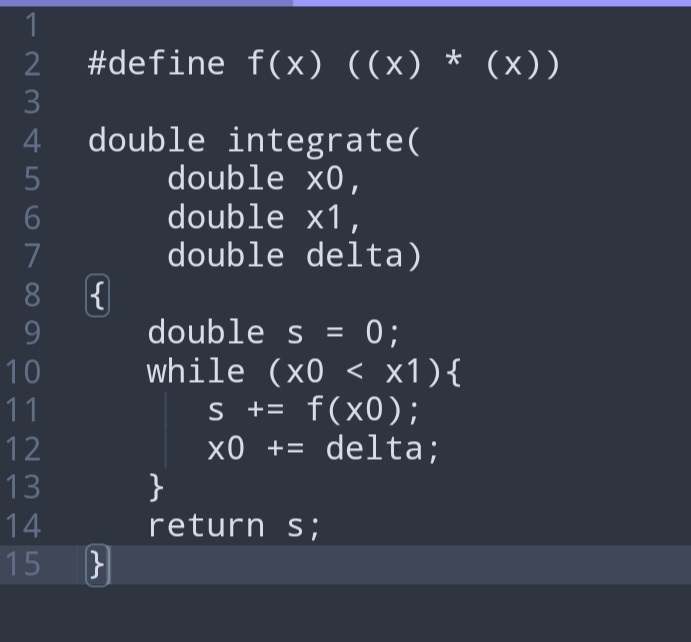
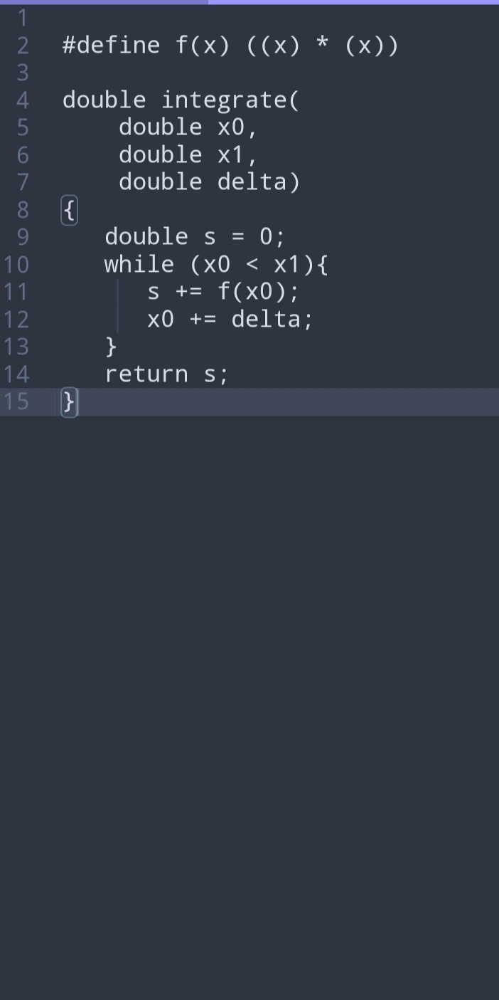

2021-01-13(三)22:18:13 ID:TZ50xeO (PO主) [举报] No.33858140
po回不来了 论文没写完 后天deadline
半年努力要切了(;´Д`)貌似咕了
来源： No.26809644 - A岛匿名版 https://adnmb3.com/t/26809644?page=32#ixzz6lnMPSfvI
来源：
A岛匿名版 - TZ50xeO 串号：26809644
想了个这样的故事。已经走到极限的计算机领域年轻大牛教授，发现自己的生活充满了遗憾。
在拿到无数best paper award/conference co-chair/终身教职后的一天，因为好奇心注意到一门叫julia的神奇动态语言。
对生活和研究失去兴趣的年轻教授开始研究这门语言，在沉浸于为julia实现静态编译器的时候，因为julia debug太过漫长恶心(不能快速运行程序看错误)，导致不爽的教授连续爆肝三天三夜后猝死。
醒来之后，发现回到了大一入学军训后的第一天。
十八岁的教授打开手机网页，想确认自己是否是做了一个漫长的梦。当他用自己在未来提出的某个idea，在论坛上成功引出自己未来的导师、他的学术偶像o爷发言后，他确信了自己回到了十八岁！
啊，有很多可以做的！
有很多遗憾可以弥补，有很多新东西可以尝试！
想到这里，十八岁的未来教授露出了坏笑。
无标题 无名氏 2020-05-19(二)08:05:54 ID:TZ50xeO (PO主) [举报] No.26810615
>>No.26810399
没这么快啊肥哥，我想办法调整下节奏就是了
无标题 无名氏 2020-05-19(二)08:06:36 ID:TZ50xeO (PO主) [举报] No.26810626
大家想看专一的"女主"还是？
无标题 无名氏 2020-05-19(二)08:48:02 ID:TZ50xeO (PO主) [举报] No.26811245
Nice, 吼。马上来了1 回到十八岁？这tm什么怪力乱神!
“我*，邵哥，你在买什么…” 室长陈天飘到了我的手机.
但我现在人是懵的.
看着眼前这个熟悉的小寝室，白炽灯下，用手柄打着黑魂的Z哥，赤裸上身吃着校外炒饭看着综艺的肥爷，还有拿着英语词典、一脸震惊望着我的室长陈天…
我睡着了? 做梦了?
手上的手机，居然是大一时用的的那个… 还是新的…
大一军训后的某段时间？
手机上是淘宝女装店… 干, 这么多年，还在想当年的破事…
“我…在做梦?” 我有些晕乎，因为感觉眼前太真实了，不由得问出了口。
究竟是怎么回事呢？
明明，我已经成为了当初想成为的人，完成了梦想，成为了”程序之神”，成为了FK大的教授…
但刚刚眼前突然一黑, 就变成现在这个样子…
视力变得很好，肩膀变得不酸，啊，这是什么神仙感受.
“你怕是在做什么梦哦，” 陈天的惊讶转为某种笑意，“兄弟，放心，我不看了。”
他回过头去，坐在自己床下的书桌上，继续背英语单词。
我一脸黑线的关闭在女装店页面的淘宝，站了起来，打开阳台的窗户。
走上阳台，正是大学生们躁动的夜晚，新鲜的空气溢入肺部，年轻和健康的感觉带给我喜悦和震惊…
“这一切… 是真的?”
看看手机上的时间，正是军训结束后的七天长假。
这是我十八岁那年，大学真正开始的时刻…
这tm什么怪力乱神？！
事情，还要从我意识的前15分钟说起.
【前世】
邵流空坐在他的电脑面前，戴着脑机接口(BCI)操作着UI图形界面，无聊地浏览着网页。
去年， 32岁的他被国内的FK大学聘请为了Programming Languages(PL)方面的正教授，年纪轻轻便领导着一个尖端的实验室。
别看这似乎已经分外的破格，实际上，从学术界/工业界的地位来讲，他的实力和认可度远远不止于此。
多年以前，本科毕业的他追寻着自己的学术偶像o爷，踏上了岛国的求学之路，从研究生开始便一发而不可收拾，
ICFP、 POPL、 PEPM、ASPLOS、APLAS… 这些相关领域的顶级会议，早在他的硕士期间便熟悉了他的存在。
硕士最后一年，他实现了对python语言的高度优化，解决了python 30多年来的性能问题，从而在工业界名声大噪；
在博士期间，他持续在几门尖端国际研究的输出贡献，奠定了他学术的地位。
他参与了很多重要编程语言的迭代更新，领导了很多新的编程语言的开发…
但，他已经走到了极限…
因为他已经完成了梦想。
他的梦想说来话长，总之一开始只是对python语言的优化，后来，变成了对“统一编程语言”的渴望。
前者被他在硕士期间独立解决，而后者，在他31岁那年，“解决大部分问题”的ultimate工业语言，”U语言”, 横空出世，而邵流空，正是重要的贡献者之一。
在那之后，虽然PL领域仍有很多问题，但他已经难以激起长期的热情…
并不是完全没有好奇心，但他已经出现了问题。
第一个问题，是心灵不再年轻。
他明显感觉到，因为长期对细分领域的深耕，海量的知识和技能固定了思维的方式。对于新的东西，因为一眼看见漏洞，反而难以挖掘到或许细微的奥妙。
第二个问题，是他饱受健康问题的折磨。这也是为什么他在使用缓慢的脑机接口。
十多年来的超过常理的热情，将他的身体摧残到如今这般，早在本科后期，便已有严重的肩周炎和颈椎病。
且不提这些，他研究生时，本来以为怎么也用不坏的双目高度近视，开始脱发；博士期间，因为久坐而腰间盘突出，缺乏运动而双肾结石，作息紊乱而神经性鼻炎…
无数的毛病，哪怕他坐着不动，只要没有沉浸到其他事情里，便是难言的痛苦。
对他而言，研究学习通常需要慢慢深入才能产生巨大的热情，他已经无法度过第一个阶段。
感觉一切啊，已经变得了无趣味。原本以为有了统一语言，便能够着手做一些更加通俗且好玩的事，但没想到，落到这幅下场。
另外，虽然他的地位很高，甚至被工业界和年轻人们取了”程序之神”的名号，但他自己知道，自己只继承了o爷不到30%的知识。
o爷是远远超过他的天才，虽然或许在世俗世界和工业界并不声名显赫，但邵流空明白，自己的学术偶像才是人类的瑰宝。
o爷是老毛子，前SL时去的岛国，已经年过七旬，却仍奋战在自己已经退出的第一线，引导着无数更加有趣而深远的研究，更有着他无法达到的生活习惯和身体素质。
总觉得活着好没意思，好没意思…
但是毕竟自己主导着一个重要的实验室…
虽然自己已没有更远的未来，但希望以后，凭借自己这边的努力，国内相关方向的学生能少走点弯路。
唉，说着就颓废。
年轻却一身病的教授百无聊赖的翻过caml-list, jithub dashboard, hacker news, adnmb和各个程序语言的论坛…
好无聊啊… 勉强在leddit的haskell版块钓了几条小鱼乐了一下，似乎偶然还钓到了自己的某个学生…
但突然间，邵教授的眼睛里焕发神采。
一个叫“Wangxuan”的人在U语言的论坛上开出了嘲讽: “你们这些PL界的菜鸡，见过零开销的运行时eval吗？”
“零开销的运行时eval”?!
“eval”是一个很强也很弱的的东西，来自于远古的LISP语言，而它的弱点，除开安全性外，最关键的就是性能太差。
而”零开销的运行时eval”… “程序之神”思索了片刻，确认这是超过了他已知世界范围外的东西。
他继续看着Wangxuan的发言，看到”no hype but JULIA is the best in some degree”.
最关键的是，他看到这个发言的like里，有自己的一位师兄，那也是一位他认可的计算机科学家。
讲道理这种明显的引战沙雕言论应该被群起而攻之，甚至删帖，但U语言论坛里那些自己熟知的、管理着论坛的最顶级PL学者，却没有这样做…
他们都是务实的人，那么这说明…
邵教授直接扯下了脑袋上的BCI头盔，从电脑桌旁取出他有些吃灰的hhkb，飞快的敲了起来。
比起学界里还未解开、由来已久的open problems, 这种彻底的新东西能够切实地点燃到他。
Water Fox Canonical for Emacs启动！进入网页！鸭鸭狗搜索里输入”Julia Language”！
凉了两年半的热血再次沸腾！
他见到这门主页上标着令人侧目的性能评估图表，随即打开终端程序安装了语言的开发环境。
殊不知，这改变了他的未来… 或是过去…
他只记得随后，自己疯狂地沉迷在这门语言的学习和研究中，身体的痛觉早已消失不见。
接下来的一天里，他深刻地掌握了这门语言，也了解了Wangxuan所说”零开销的运行时eval”是何物。
Julia语言有着强大无比的表达能力！在惊叹着一切的同时，教授也意识到Julia的问题:
启动太慢！运行时会触发编译！
虽然从平均时间来看，Julia程序可以快过高度优化的c语言, 甚至理论上可以超过静态的汇编，但对于毫秒级的脚本，乃至程序的调试来说，
Julia的延迟是致命的。
于是，擅长编译原理的”程序之神”邪魅一笑，开始查看这门语言的设计细则，并废寝忘食地为它实现静态编译器。
也不知过了多久..
当代码超过10万行时，”程序之神”写错了好多代码，各种各样的错误…
而Julia无法静态检查错误… 而运行debug又极为缓慢！
就在这疯狂而低效的运行、报错、修改、运行的流程中，教授没有注意已经过去了好几个黑夜和白天，只是兀自塞着零食，喝着可乐，
决心只要自己的时间安排闹钟不响，就一直搞下去。
然后…
然后他挂了…
他并不知道自己挂了，只是眼前一眼。
明亮而熟悉的白炽灯光洒在他的脸上，视觉、听觉变得敏锐，身上的痛苦尽数消失。
他坐在令人怀念的椅子上，侧靠着床下宽敞的书桌。
书桌上是大一时的课本和纸稿，还有军训刚结束时贴的动漫图。
熟悉的室友们又在眼前，忙着各自的事情，其中，室长正一脸讶异地望着自己… 和自己手上滑着的手机…
那里，是TB女装店。
“胖妹妹女装店”, 记得他家卖很多大码女装，而且一点都不胖…
2 我要成为绝赞的美♂少女
“如果我真的回到了18岁…”
懵逼中的”教授”吹着夜风，开始思考。
小时候，自己还对物理有兴趣时，也想过穿越时空这种事。如果能穿越时空，时间长河中的每一点，应该是由整个时间长河来决定，过去应该无法改变，顶多可以欺骗。。
“没法改变？”
邵流空转身走进宿舍，抓住正在打黑魂的Z君:”别爱吟哥了，爱我吧！”
这是自己当年绝对不会做的事，如果做了…
必然彻底颠覆大家对自己的印象，将来发生的事理应有很大的变化。
然后Z哥游戏被一个狗要死了。
“cnm，你干什么！”
Z哥其实脾气很好，很温和。然后经常被我们拿来和吟哥开玩笑…
因为，隔壁的吟哥每天都会过来嬉皮笑脸地摸他，gay得莫发，慢慢地，吟哥和Z哥就成了班上的梗——虽然这个逼，我是说吟哥，其实有女朋友，但我们大四才知道，全是虚枪。
我脑中闪过这些有的没得，看到他似乎是在笑骂，看起来只当我在开玩笑？
干，必须再干点夸张的事。
正当我想要进一步改变未来时，一个声音清晰地出现在我的脑海里:
“tagless, 你是否确认要这样做？”
tagless, 是我大一下的暑假创建jithub账号时用的id, 这个id日后将会名满天下，但此刻为何…
我有点谨慎，想着:”有什么问题吗？”
“没什么问题，只是会让你无法预测未来。”
那个声音是女声，而且，感觉很熟悉…却绝对不是自己认识的人。
“你是谁？”
“你应该明白，有些事你不该去探索，那是徒劳。请好好享受你的第二人生。”
我思忖片刻，”嗯。我要改变。”
“好的，再会。”我似乎听到了笑意。
肥爷和陈天已经被自己的突然举动吓到了，都望了过来。
我深深地吸了口气，然后对着Z哥说:
“Z哥，我喜欢你，可以和我在一起吗？认真地。”
其实我稍微有点恶心。虽然对面带把，但伪娘之类我也欣然接受。但如果是正常直男，如果我不是伪娘状态。。。
但还是坚持地说了出来，只为了验证能否破坏已知的未来。一旦大家觉得我是这样的，有一些曾经的未来将绝对不会发生。
抱歉，Z哥，当下工具人。当年你毕设我可没少帮你。
“嚯…”陈天和肥爷 带着笑意开始起哄。
“傻逼，滚。”Z哥看出我眼里的认真，开始变得冰冷。
我并不期待他回应什么，实际上我也知道他会是这个态度。Z哥是很不接受伪娘之类东西的。
唉。我当年没少安利他女装，他的肩宽可比我还有优势。
“好滴。”
我笑了。
这下，只要让大家确信我是认真的，未来有些事一定不会发生。
那么就基本验证了世界能改变，我心里打起了小算盘…
“邵哥，你…认真的…？” 肥爷挤着脸，笑成了菊花一般。
“是啊。我觉得吧，还是应该把真实的自我展现给要相处四年的室友，你说对不对嘛。当然，放心，我对大家没想法… 嗯，只对Z哥有一点… 既然他不愿意我也不想改变他的取向啥的…”
“cnmd，你再说？！”Z哥勃然大怒，举起椅子要砸我，我连忙求饶。
干，当年吟哥各种骚操作，也没见你生过这么大气啊。
“好了好了，我也是下定决心才说出来的… 哎Z哥别这样我错了… 嗯，总之就这么回事，大家忙吧，我先睡了…”
在大家有点看怪物的眼里，才九点的时分，我便抓起手机爬上了床。
谁tm能想象我此刻的兴奋！
过去那么多年，有那么多的遗憾…
想做的事情很多，却没有完成，错过了时机…
但要说最想做的事情，除开维持一个健康的身体外…
想起当年被一群人喊lp的事。
想起那妩媚的眼神，鲜红的嘴唇，宽松下斜的睡衣，白皙细长的双腿，还有那睡衣下沿欲盖弥彰的丁丁，和一个个让人欲罢不能的姿势…
干，那是我自己。
依稀记得那些年为此拍了快一万张照片，没事发两张到adnmb, 听到人喊句lp, 说些羞羞羞羞的话，就觉得浑身燥热，充满欲望的扭动…
偶尔没事，也看看自己照片自产自销…
hso, 真的刺激。
我，决定了。
嗯。
躲在被子里开始疯狂添加购物车的我，露出微妙的坏笑。
我决定了，我tm…
嗯，以后不能说tm了，是乖巧美少女了！
对，没错，我决定，这一次
要成为绝赞的美♂少女✔
啊啊，这么吧，我说几个类型，肥哥们选(也可以加新选项):
1. 伪娘直男
2. 伪百合(伪娘真娘)
3. 里百合(伪娘伪娘)
本来有把主角往bitch写的想法，但感觉这样写到后面不好写。之前有肥哥说纯爱，目前感觉是纯爱好点。
肥哥们有建议的话麻烦说一下。在清空了购物车后，无尽的疲惫感涌入了我的大脑。
在我的感受里，意象中，阻断思考的黑色气流，慢慢地攀附上我大脑里的神经。
我感知到的世界逐渐地黯淡，手指松开了手机，被黑暗簇拥着，意识渐渐模糊。
在失去意识那刻，我想到，人大概真的是有灵魂的，灵魂或是某种我们还未发现的物质结构。
在我以18岁的少年之身来到这里之前，不眠不休debug julia程序早已积累了无尽的疲劳，即便我的身体变得再次年轻健康，似乎”灵魂”的劳累并没有得到缓解。
我陷入了沉眠。
3 提前开始的女装
睁开眼睛，婴儿般的世界。
如此的清楚…
脖子没有痛觉。
“果然，这一次一定要注意身体，不能太肝…”
我起身，看到室友们还在呼呼大睡。
心中涌起说不清道不明的温暖。
过去的回忆里，自己从大二开始，平均每天敲码十个小时，不停地爆肝，逐渐和室友们拉开了距离。在大三之后，修完了课程的自己去了BJ，在某巨硬公司的研究院实习，更是感觉和班级割裂开来。
自己何尝不想要和室友们相处更好，共同构建这更好的四年回忆与经历？
可惜，当时的自己被热情和理想束缚，在如此凉薄的世界下，被逼着不断做出选择，或着说，舍弃。
我叹了口气，心中做出决定，但忽然看到我睡觉的这头是Z哥的脚。
淦，我和他床位是连着的，一般我们俩都是头朝彼此睡，昨晚他跑到另一头去了。。
mmp，拿脚熏我？
emmmmm.. 美少女不能说mmp
我压抑住腹诽，轻轻地爬下了床位。
洗漱过后，我回到床位，坐在桌前愣愣地发神。
现在还是突兀地回到了18岁的感觉…
但即便如此，似乎事情还有另一种可能性。
那就是我做了一个很长很长的梦，但梦里的一切都是假的。
假如我的根基不是那个34岁的”程序语言之神”，而是这个18岁的踌躇少年，记忆的变化只是某些病变…
我心中有些忧虑，我想起了曾经记忆中有些珍贵的场景，握紧拳头。
“试一下好了。”
究竟对不对，检验一下自己所知的专业历史和科学原理是否为真，不就好了？
大一上的时候，不准带电脑。整个班只有那个表面gay gay的吟哥带了，为此他受了不少惩罚。
所以没办法，只能用手机去查东西。
我打开网页，首先输入haskell.org。
这个时间点的自己，甚至还没接触过编程，不应该知道这些。
然后，网页亮了，是熟悉的图标！
这扁平风格的网页，这基佬紫的语言logo, 首页两行写出的求解所有质数的程序，诉说着haskell作为”肥宅快乐语”的不凡。
在这个时间点，haskell是通用编程语言中”静态类型系统”最为强大的一个，能够在程序运行前检测出大部分的问题，能够支持自由灵活而不失可读性、可维护性的抽象。
“很好，基本上就稳了…”曾经也是一名haskeller的我抿嘴一笑。
haskell的取名，是为了纪念计算机科学家haskell curry。这位科学家的姓，curry，正是函数式编程中一个非常基石的特性，中文名叫做柯里化，为程序的可组合性带来了惊人的提升。
我搜索haskell curry, 嗯，百科上显示的是他！
18岁美♂少女狂喜！
我咧嘴笑开，依然是那个”程序语言之神”。
我又随手搜了下自己的偶像，o爷。
o爷是学术世界的传奇，崇拜者众多，这也是他不使用常规社交网络的原因。
但我知道，这个时间，他应该在哪儿。
我打开了那个小众的网站，发了一个帖子:
Title: MetaOkamal scoping issues?
Content:
“hi, I wonder if metaokamal coud solve its scoping issues in let-rec generations via row polymorphisms? maybe we could encode scope information in the type of a code expression?”
并打下了#metaokamal的tag。
钩直饵咸。
这正是自己当年第一篇顶级论文的idea, 解决了o爷开发的metaokamal语言的一个难题，生成递归定义时的符号作用域问题。
讲道理，o爷一定能在15分钟内看到并回复，只要他看到这个一定会兴奋不已，追问自己细节。
并且完全不用担心o爷现在不在。
首先他订阅了这个论坛#metaokamal的标签，会收到通知。
其次他的作息几十年来如一日的稳定，岛国的时间快国内1小时，这时他应该在一边喝早茶，一边浏览领域内的新闻。
然后，仅仅过了三分钟。
一个名叫”OK”的人回复了: “could be interesting. any details?”
“just a vague idea, nvrmind”
我心满意足地关上了手机，开始考虑女装的事情。
说到女装呢，害。
其实那也是过去的”程序语言之神”很重要的一面。我是从博士开始戒掉这个的，很难。
毕竟，女装只有0或无穷次。
但硕士毕业时，我的教授y-sensei把我喊到办公室。y-sensei也是PL学术世界里一个强大的存在，更是o爷的知己。
“流空桑，这照片是不是你?”
当时我tm花容失色，惊慌失措:
“sensei, 你听我解释…”
“解释个屁。你小子，发点女装照没啥，我们岛国见多了。但你看你露的，你这表情这动作，小色批牛逼啊。”
“我错了，y教授我错了…”
我吓尿了，虽然已经以为python的性能优化名扬天下，但我在这些大牛面前没有任何底气。
“流空桑，你把你的社交账号都换了吧。要不就离开学术界。”教授的脸很坚决。
“好… 但jithub算不算社交？”
jithub的账号”tagless”，这个id已经对我而言意义非凡。
y教授叹了口气:
“我知道tagless很重要，但是tagless这个账号，也必须退出一些少儿不宜的组织。你那个galgame游戏制作框架，别以为我不知道。”
“是…是的。”我明白，这个已经是让步了。
“你*师兄不是那个框架的并列第一开发者吗，你把项目权限全给他呗。他在工业界搞这些没什么问题，你想继续写的话，开个小号去贡献代码就行。”‘
“嗯…”教授考虑还蛮周到。
总之，那时逐渐成为”程序语言之神”的我，已经没有办法再女装。那成为了我最大的遗憾，现在我终于有了机会去弥补。
我开始女装本应该是大二下，现在提前了一年半。
“TB能不能快点，能不能快点？”
气氛逐渐焦灼。
我感觉好无聊好无聊，好烦躁好烦躁。
女装的自己在心中越发的清晰起来，渴望逐渐变得难以遏止。
“给TB物流倒一杯卡布奇诺。”
我看了看桌上的线性代数作业，索性还有印象，不是很难，草草地完成后，便趴在桌上无神呻吟。
“邵哥，你咋了？”
室友们已经醒了，正在桌位上干自己的事。陈天正在玩着类似英雄联盟的手游，有点关切地问我。
我哭丧着脸，转过头去望着他:
“我想玩女枪。”
中午去食堂吃了饭，跑到了校门另一端拿了包裹。
女装，化妆品，各种东西，终于到了。
嗨呀，诸君，我兴奋死了。
TB物流牛逼，永远滴神。
不过未来似乎没这么快了。。
我兴冲冲地跑回寝室，”各位，我给你们表演个魔法。”
“干，邵哥你今天有点怪。”
肥爷取下耳机，停下了他的综艺，对我打趣。
陈天一脸嫌弃地看着我，这逼在学习时就这幅清高的样子，看到躁动的我要蔑视一下。
而Z哥不理我，他昨天真的生气了。
没事，就用世界的美少女来暖化他的心吧！
我笑嘻嘻地拆了箱子，把化妆品整理好，把木桩塞进衣柜。
“干，邵哥，我刚刚是不是眼花了？”
肥爷有点颤抖地问我。他的床位和我面对面，所以能看清所有细节。
我娴熟地对他抛了一个未来练成的媚眼:
“肥爷等会就知道了，不过干你邵哥还是算了。”
其实好多都是真实的(
可能涉及敏感的我都魔改了一下，leddit, jithub之类的(ゝ∀･)化妆之前，先跑出去洗面。回来便取出假发，戴起头套，开始化妆。
因为刚军训完，皮肤相当黑，那就画个黑皮好了。
我开始拨弄着瓶瓶罐罐。
“干，你在干嘛啊邵哥？”
肥爷的好奇心让他不时瞄两眼，果然刚开始化妆就被发现了。
“化妆。”
“woc!”
另外两个人，包括Z哥，也带着笑意惊讶的出声。
三个人凑了过来。
“唉呀妈呀。”
东北人的陈天看到我化妆中途的脸，冒出了口音。
“cao, 你在干嘛啊。”
Z哥因为已经凑了过来，也不好摆冷脸，笑嘻嘻地问我。
“哎哎哎，你们三个，说了等会给你们看魔法的，等一会不行？”
我用高人一般的语气云淡风轻地说。
“行，邵哥，好了喊我。爸爸今天来兴趣了。”肥爷拍拍我的肩。
陈天和Z哥也应和两声，带着半分新奇半分期待回去搞自己的事情。
讲道理，化妆是个技术活。
“前世”在本科期间，我的化妆水平一直不太靠谱，一般要化一个小时，但有时两小时都可能化崩。
后来留学去了岛国，我的一位好朋友(也是女程序员)藤井小姐给了我不少指点。后来在硕士毕业时，15分钟就能化好一张美美甜甜的少女脸。
这次，只用了20分钟，我就搞定了妆容。是黑皮的不良少女哟。
那健康的小麦肤色下，可人的粉色嫩唇晶莹而剔透，深黑的眼线中透出酒红色的光影，眼神显得妩媚又帅气，小嘴微张，感觉自己要把自己的灵魂勾走。
爱了，黑皮不良少女。
不过现在还是不能看，因为还需要假发注入灵魂。
由于目前的经济状况，我只买了一顶假发，是长发的，说起来并不是很适合目前的黑皮妆。假发是比较贵的，因为根据过去的经验，假发一定要买贵的，这样才更加接近人发。虽然便宜的假发也很好看，但发丝毛躁，掉丝严重，穿戴起来非常要命。
我轻巧地戴起假发，用两张发卡定住刘海。镜子一照——
ojbk!
不对美少女不能说j*，嗯。
“可~“我用伪声对着自己评价。
“cao! caocaocaocao, 你们快看，邵哥太牛逼了！”
肥爷听到我的声音，回头一看，大惊失色，立马中断正看着的综艺，起来喊陈天和Z哥。
“啥，有这么夸张，让我看看，说起来刚刚是不是有女人的声… 哎！呀妈呀！”
陈天眼珠子都要出来了。
“cao, 我们邵姐真的太厉害了…”
Z笑得停不下来。
我得意的扬了扬头。
“不是，你这衣服不行啊。”
陈天突然摸着下巴。
“他…他有女人衣服，我刚看到了他拆包。”
肥哥跟他讲道。
“cao！兄弟，准备这么齐全的吗！？”
“是的哦~“
“卧槽，你还会女人说话？！”
肥爷震撼。
“不对，邵姐，你是不是假冒的男生哦？”
陈天的眼神开始挣扎。
“去你的，老娘可是百分之一亿的猛男哦~我要换衣服了~“
“我是不是该出去?”
Z哥看看我们，直接疑惑。
“我也觉得？”室长陈天摸着下巴。
“唔，非礼勿视非礼勿视，走，咱们出去了。”
肥爷嘟囔着，胖胖的手掌推着另外两个人出去了。
“喂，我也是男的呀~怕什么呢~!”我用娇柔的少女音急忙喊到。
但事与愿违，他们的脚步更快了三分，然后关上了寝室的门。
我无奈地看看关上的门，心想这么也好。。换装时确实有些，让人看到会不自在。。
明明男装时脱个精光都无感，真是奇怪的情绪呢。。
说着我翻开了衣柜。
4 臭男人请不要把我按在墙上谢谢
还是因为目前的经济缘故，我只买了两套女装。
两件都是比较日常的，这样可以换洗。
没错，你猜对了——
我就是要日常女装。
我拿出黑色的韩式体恤，非常的宽松，中心是银白色的繁杂花朵，看得我不禁撇撇嘴。
“之后赚点钱，弄一套haskell或者purescript的文化衫吧。”我这样想。
前世读博开始，直到U语言出现前，最喜欢用的语言就是这两门。不过目前这个时间点，purescript应该才出来没多久，算是超级小众了。那就haskell吧。
先套上黑色的体恤，我又望望寝室的门。
室友叽叽喳喳透过门传到我的耳里，貌似因为尴尬开始聊游戏了，一时半会不会进来。
于是我脱下裤子，拿出透视的黑色丝袜，穿了上去，稍微调整觉得还不错，又摸了一把。
然后我开始在深蓝牛仔和黑色短裙之间纠结。
“唉，没办法，平时太骚了不好。”
叹了口气，我拿出深蓝的牛仔裤穿了上去。
可惜了我这一腿薄如蝉翼的黑丝，黑丝下隐约可见、令人咽口水的光腿。
照照镜子，嘛，还是很不错。元气少女！
我转了个身，做了几个剪刀手。
哎哟，好婊好婊。
想干一杯子。
虽然吧，觉得要是能穿短裙，露出腿和丝袜…
应该会炒鸡nice…
害，因为一会儿要出门，所以不得不克制一下。
男孩子在外要保护好自己，当然学校也有学校的规章制度。
“我好了~“
门外唠家常般的游戏谈话戛然而止。
门里门外，沉默无言。不知道为啥，我脸好像有点热…
“你…好了？”Z哥犹豫地问。
“噗…”我以及门外的陈天，肥爷都笑出了声。
Z哥这个人特别会说话，恰到好处。刚刚他那个犹豫的语气，绝对是灵机一动的插科打趣。
这家伙当年不去做直播，其实我还惋惜了一阵子。
“那邵姐，是你出来还是我们进来啊？”陈天问到。
“干，室长，你这话说的…”
我听到肥爷拍了一下他。
“咳咳…我们不动，邵姐你自己动吧…”
“室长你口味太冲了。”肥爷又在吐槽。
我也有点难受… 感觉身体在微微颤抖…
莫名其妙，我可是办过无数个workshop，在数不清的国际学术会议里怼人的狠角色…
可我这是在，紧张？
肯定是室长说话太黄了， 虽然可能他可能真的没那个意思…
“肥仔你tm干嘛，我说啥都不行那你来说！”
陈天好像有点崩，对肥爷吼道。
“你闹什么闹，我好心提醒你…”
“提醒nmb提醒，好好的本意你一说跟啥似的…”
“你说的不对我还不能说了怎么的，你那么说，里面邵哥怎么想？！”
就在他俩吵的不可开交之时，我打开了门。
“吵nm呢，你们三个快进来。”
冰冷少女音。
沉默。
沉默…
“邵姐，你这也太…原谅我只会一句卧槽…”陈天表情痛苦。
“邵哥，你这个真的好婊啊，牛逼牛逼。”肥爷对我竖起大拇指。
而Z哥第一个迈步往里走:
“好，好，这就进来。”
我挥起40块钱的小锤锤，假装凶狠地打了一下他的肩膀。
干，这逼怎么笑成这样。
气氛有一点尴尬，这几个人好像蛮不自在的。
搞得我也有点不自在。
“咳咳…”
我清了清嗓子，觉得还是说点什么比较好，便故作自然和冷淡地开口:
“总之以后我基本就女装状态了，给大家预报一下，应该没什么问题吧？”
“邵姐你这样我们很难办啊。”
陈天有点无奈。
“难办什么？”
我瞪了他一眼。
好像表情有点凶了…
“你tm太A了。每天看这么个大妹子进进出出寝室，谁受得了啊？”
但肥爷立刻笑着怼了室长:
“屁嘞，我就受得了。邵哥快加大力度，骚死这个老色批。”
“肥仔你tm是不是搞事情，你真没感觉？你怕不是个gay。”
“嗯嗯嗯。是是是。我tm怕是个gay。”
“唉，你俩别吵了。邵流空你以后穿女装穿就是了，我觉得okay。”
Z哥从自己桌上的塑料箱子取出零食，一手撑着上%床的梯%子，一边把椅子翘起来又放下来。
“嗯… 反正你们没问题就好~“ 我甜甜一笑，这笑里是黑皮不良少女那过分饱满的神采。
“淦，你说书呢，我这儿是没问题吗？！你是不是想看看大%宝贝？”
陈天情绪有点激动的样子。
“噫~好恶心。”
我一脸鄙夷地出声。
“噫…”
肥爷和Z君也是一个表示。
整得陈天突然被三个人对立起来，他脸涨得通红，咬咬牙，站了起来，像是在展露他室长的威严。
他朝我疾步走来。
冰冷的黑皮不良少女，表情逐渐变得惊慌。
“啊~ 室长你干嘛！”
他狠狠地把我撞到衣柜的门上。
干，人生第一次被壁咚了。
美少女不能说干… 去nm的不能说干，一双大手把我直接按住，我心中奔过一千头草泥马。
“你个臭婊%子搞事有点厉害啊？啊？！”
好像有点生气，我低头…
淦，看到迷之突起…
我完了，还是玩大了…
这时肥爷和Z哥过来救场，把室长拉住了。
“哥，别这么生气，大家就开开玩笑…”
肥爷陪笑。
“开开玩笑，你们tm说这是开开玩…”
陈天看到不说话而瘫在衣柜上的，眼泪汪汪的我，停住了，
“额，邵流空，是我过了点，不好意思…”
“臭男人请不要把我按在墙上谢谢！”
我噙着眼泪，甩开他已经放松的手。
“md我这是怎么了, 唉还是邵姐你女装太香了。你放心我有心理准备了，以后不会这样了。”
陈天挠挠脑袋，好像对我的反应有点不知所措。
“是我的问题，突然给你们穿女装可能是有点…”
我轻轻地说着。
“害，没事了，就这样就这样，”
陈天从鬼迷心窍的状态走了出来，立刻变成了平时那种咱俩谁跟谁的样子，
“以后寝室多个大美女，不是坏事。理工大学女生少，咱这些优秀青年说不定耐不住寂寞就被什么似的女生骗走了，邵姐在这儿，也是提高我们的眼界，拔高我们的标准，对未来的伴侣也是种负责。”
“合理。”
Z哥便秘一般沉吟。
看到他的动作表情，陈天，肥爷，还有泪光楚楚的我，都噗嗤地笑了。
5 再见回忆中的老图书馆，在安静的星空下，闭馆时的音乐好悠长
寝室女装的问题解决了，大家也开始各干各的事。
我准备出门去图书馆，基本上遵守一下记忆中的时间线。
我有些感慨地，拿起那个会从大一陪我到硕士毕业的书包。
高中时我曾用过名牌的包，但它没有坚持很久。
反倒是，眼前这个不起眼的老伙计，陪着年轻时的自己闯荡开源世界，留下了无数回味醇厚而甘甜的珍重回忆。
不良的黑皮少女笑了笑，假模假样地把桌上那本《C++程序设计》装到了包里。
又从书柜上取下那本装订精致的《在少女花影下》，心中涌起一股难言的暖流，放进书包。
这书，是高中很崇敬的一个同学送我的。
崇敬这词，即便是”程序语言之神”的自己，也并不觉得夸张。
那个人虽然模样枯槁如老头，纯数学的知识却浩如烟海。他高中也随意搞搞数学竞赛，成绩并非最拔尖那列，却不得不说他具有必须认可的学术态度。其知识量，远远超越常规的国际金牌选手。
与对数学技巧的追求相比，他更加痴迷数学里那些美妙的一致，在不觉相似的领域忽然间深刻联结的巧合——
而这种taste，也正是Programming Languages之于计算机科学的本质动机和美感，对此我也是倾尽一生。
可以说，是不同领域的共鸣。
我想，高中毕业时，他送了书的同学，应该都是自己有不舍的人。他的情绪和常人差异很大。当时拿到书，看到他一脸通常高三学生的腼腆，我也是有点惊奇。
不过说来惭愧。
此书在我”前世”的最后一刻，也没看完二十页…
但它始终躺在我身边的书架上，从本科，到岛国的硕博，到法国U语言开发，再到国内的fk的PL实验室。
这次。
要慢慢看啊。
说起来，以前的人生，可真的很匆忙。
黑皮美少女背起包，正要往外走。
我不经意看到肥爷的手机退出应用，回到桌面，那里是他最爱的明星TY。
“哎，肥爷，你说我和TY谁好看？”
肥爷回过头来，想了一下，露出一脸的不屑:
“不好说，反正你没她清纯。肥爷我可是很看内在的人。”
我笑着对他点点头，迈着轻盈的脚步走出了寝室。
我不了解明星，但听过很多事，或许TY并不是肥爷说的那样美好。
但这并不重要。
重要的是，我知道肥爷的确是个很看内在的人。
“前世”的回忆里，就在几天之后，我会和肥爷产生莫名其妙的矛盾。
直到大四即将分别之际，矛盾化解，我才知道。
他是个难得地保持了少年心的、很看内在的肥肥。
我走出寝室，一怔。
又跑回去，从衣柜里取出鸭舌帽戴上。
老反复了，看来十多年没回寝室，一回来这种出门忘带东西的习惯还是根深蒂固。
这顶帽子，是入学时和寝室大伙一块去校外的批发市场买的，一人一顶，样式都不同。
没记错的话，”前世”应该在军训后，就把它放到衣柜里吃了四年灰。
总之先下楼了。
我们宿舍在很高的楼层，但我还是选择走楼梯。
这里有两个考虑:
1./ 我决定要多锻炼… 说了这一次要保护好身体的啦！
2./ 因为感觉坐电梯碰到熟人还是会有点尴尬。自己可能还好，但保不准又把别人”魅惑”得跟室长之前一样。多一事，不如少一事。
楼道里路过了几个人，他们也只当是来男宿舍的女生，多刮了几眼，并没有觉得特别奇怪。其实我的肩宽对于女装并不完美，但这件宽大的体恤很好地解决了这个问题。
来到了宿舍楼下，我环顾一下四周。
穿上女装之后，原本中午前那种急切的感觉消失了——
思索变得很单纯，很平淡，很安静，于是积压在记忆底部的东西，也能顺畅地涌入脑海。
然后我去宿舍区的小卖部买了瓶矿泉水。你问我为啥不买其他饮料？
我当年也是不信邪，然后…
肾结石教你做人。
“诶，美女哪个专业的啊。”
我站在小卖部门口，回忆去图书馆的路，这时有个很英朗的声音向我搭讪。
我回头一看，那是我本科时老好的一个兄弟，钛爷。钛爷是魔都人，说话像个播音员，很正经，有义气，常规成绩方面不比我差…
可从来不知道他居然会向女孩子搭讪！
好哇，好哇。
原来这就是我单身34年的原因吗？
我撅起嘴，”喂，你干嘛啊，查户口啊？”
说起来，我和钛爷和我认识是在军训期间。
军训有休息时间，我和他靠在校徽雕像的背面，两个大男孩望着星空，潇洒坦然，谈世界观，谈价值观…
然后我tm画个妆你就认不出我了？！
“没啥，就觉得你气质真好，感觉咱们应该聊得来。我有个姓邵的好兄弟，和小姐姐感觉很像，一眼过去就知道这人想到了第五层。”
干，他还是有点洞察力的嘛。
“哦，我…计算机的，没什么事我先走了。”
我转身就走。
你问我我想不想念这个人，我还是想的。十多年没见了。
但主要还是自己没想好。没想好以后，是让大家都知道我女装，还是弄个表面的假身份，比如姐姐之类的。
“我统计的… 诶，这就走，不多说几句？”
听到他背后喊我的声音，我感觉他应该对”这个我”没什么肮脏的想法。
唉。
“我记住你了，以后有缘再聊。”我还是回了一句。
心里一阵暗爽——黑皮不良就是适合装高冷，很自然。
下午的太阳还是很毒，我庆幸自己戴了顶帽子。
路过学校中心，新的图书馆还没建好。
总说明年好明年好，其实还得等个两年半。
不过也好…
因为，我很想那个老图书馆。
我正要去的地方，就是那个老图书馆。
一路经过好些地方，篮球场，某个食堂，某片宿舍区…
我摇摇头，试图让自己不要沉浸在怀旧中。
“怀什么旧，旧就是现在，不用你怀。”
不良少女的嗓音里却是柔情。
走了好一会儿，总算到了老图书馆。
进门看到各种报告会的牌子，说起来，强如自己，大学四年也没去听过两次这些东西。
都是闷头肝。得到很多，也错过了很多。
缓步踏上二楼，我轻撩微微发汗的乌黑长发，凉爽的空气从左侧的厅室袭来，里面是一排排的电脑。
电脑室人很少，我看到有人戴着耳机，小声地念着什么，又像是在背诵，时不时闭着眼睛，表情还有点便秘…
“噗…”
我笑了出来，左手从兜里取出校卡，把食指插在校卡的挂件口上打了个转，一脸优哉游哉走了过去。
“阿姨，麻烦帮忙开个机子。”
不良少女临时变成甜甜的乖乖女。
淦，我好熟练，但每次这么说都觉得像上网吧。
“诶，同学，这个卡面是你嘛？”
“哎呀，您就不要管这么多了嘛。放心我不是占座的啦！”
我tm居然在撒娇？我一个欠cao黑皮不良，居然tmd在撒娇？
唉…
不过总不能对眼前这个胖胖的和蔼阿姨露出一副嫌弃的样子。
不过怎么说还是要看场合，别人不get，你那么表现，不仅不礼貌，还很脑瘫。
阿姨对我笑了笑，点点头，把卡还给了我:
“C99，去吧，电脑有问题的话过来说。”
我甜甜地点头拿回卡，转过身正欲走开…
我保持着甜美的笑容和起步的姿势，僵在原地。
阿姨也笑着看着我:
“小妹妹怎么啦？”
“阿姨能不能换个机号…”
“也行啊。”
然后我看到阿姨在屏幕上随便一点，点中了c89的机号。
“啊啊啊，阿姨，不用了不用了，我发现我朋友在旁边，c99就好！”
阿姨疑惑的转过头，”这孩子真奇怪… 不过c99旁边哪儿来的朋友，不是空的嘛？”
她不禁哆嗦一阵。
为什么我要来老图书馆？
除了怀念这里之外，我还得找个地方用电脑。
因为买了女装和化妆品，一下子就用了一个多月的零花钱，网吧都不敢去了。
再说，我们学校外面网吧都比较乌烟瘴气，虽然这挺配黑皮不良，但是现在自己正儿八经有点好看，去那里还是…不太安全。
脑子里闪过rb q剧情，感觉脸有点烫，我用手拍了拍脸。
“想…想什么呢…”
我打开电脑，开始登录一些网站。网速还将就，但电脑配置太低了…
我拿出U盘插了进去。
因为现在自己没有个人电脑，建立一个稳定的开发工作流是很困难的。
学校的电脑每次退出都会重置硬盘，所以等于每次来都需要重新配置。
所以，我打算配置一些软件到U盘里，可惜这个高中买的U盘只有2G。
所以说啦，现在是什么都是缺的。
不过还是先考虑眼前，2G以内的开发环境。
我需要一个编辑器，并且支持Emacs软件的键位。
著名的sublime text编辑器，对emacs的键位支持并不好。每次弹出恰饭广告后，一些键位就会开始冲突，自己也是因此弃坑。
后来如日中天的vscode编辑器，这个时间点还太不稳定，性能也不行。它的lexer系统在未来的一年会发生一个质变，从那以后才会摆脱卡顿。
eclipse和jetbrains系列，那些东西是超过2G的，而且这种电脑也带不动。
notepad++什么的，不跨平台，未来转移更新工作流会很麻烦。
还是装个裸emacs好了。
但emacs是一个很吃个人配置文件积累量的编辑器。每个人的emacs，都是独一无二的。
“前世”没有坚持用emacs本身，更多是因为熟练得太晚。那时自己已经需要很复杂的编辑器，而自己积累的配置完全不够用。
还有一个spacemacs，不过那个太卡了。我一向看中启动速度的优化，不然不会为此肝julia肝到了死。
这次可以试试只用emacs，要是还不行…
脑袋里闪过一个长得像lovelive里西木野真姬的lisp厨。
“那干脆以后和开源酱学vim好了，反正离遇见她应该也不到一年了。vim生态比垃圾emacs好多了。”
说写，我打开网站，装了一个emacs到U盘里。
emacs是个不错的编辑器，不仅有着能缓解颈椎病和肩周炎的键位，编辑文本也会快好几个量级。我当年还写过一段时间小说，也是用的的它。
“所以，写点什么呢…”
突然沉默。
我该去做点什么呢？
要想大幅改变历史对我并非难事。
脑中的论文和体系知识无穷无尽，只要拿出一些时间线靠后的…
把计算机发展提前个十年都有可能，但。
但我不想这么做。
不该如此。
一个成果的出现，会伴随相应思考体系的发展，和辅助工具，乃至一个生态的诞生。
机械降神般直取目的地，失去的，就是达到这个目的地的过程中，培养起来的人事物。
“呵，邵流空，你要真敢做，学界指不定还会倒退50年呢。”
我自嘲地笑笑。
走别人的路，有时真的会让别人无路可走。
听起来搞笑，其实在有这情况下，很鲁莽，还很自私。
我叹了口气，茫然地盯着屏幕，然后扬起眉毛，无奈之中，瞟到右上角有个在挠头的男生。
他的界面，正是传说中的超☆远古の小♂霸王开发环境 —— vc++ ⑥.0！
“干，原来他这个时候就每天泡图书馆了。”
找不到事做的我突然露出喜悦的神采，我轻悄悄的站了起来，理了理头发，带着猛男之气向他的背后靠了过去。
尧惘宣的坐姿非常稳健，就好像扎根在凳子上似的。
电脑室空调的凉风悄悄地从他的颈间透过，有些舒爽的同时，他看到电脑上的时间，皱了皱眉头。
已经过去四十分钟了吗？
可是这道题还没有写出来。
POJ-1001，大数乘法。
自己明明想得很清楚，写出来的程序，却怎么也过不了。
想起脑海里的那个身影，他不禁握起拳头。
虽然是新手，但卡在第一道题就过不去…
自己，真的不行吗？
英俊的少年没有表情，他从包里取出了茶水杯。
战术喝水，先。
然后慢吞吞放回杯子，右手的食指在电脑桌上轻轻敲着。
“究竟是我天分不足？还是缺少训练？”
但在没有亲身穿越困境的时候，人常常会不自觉偏向于前一个回答。
说”天分不足”，便是断掉了念想，从而没有未来，也就不会受伤。
但若是觉得自己”缺乏训练”，带着决意一路向北，或许会在遥远的未来，站在无可逾越的天堑下，看着对岸朋友同情的表情，周遭空旷，寒气弥漫，心若死灰。
少年微不可闻的叹息。
“唉，我说你是新手吧！新手就把逻辑拆得要多开有多开，搞这么个大数组累积副作用是什么意思？有没有想过用结构体去表示两个位上的相乘？”
很好听的女孩子声音从身后传来，那是浸入灵魂一般的清脆。
尧惘宣立刻回过头去。
长头发的女孩子穿着宽敞的黑色体恤和有些紧致的蓝色牛仔裤。
她的表情里透露出某种他十分熟悉的自信满满和游刃有余。
而她姣好的面容、随意的表情、娴静的眼线，以及那致命的黑皮，无不透着一股难言的媚意。如果不是自己意志坚定，这媚意，怕是立马就钻进了骨子里，让人难以自拔。
“你会编程吗？说实话我听不懂你说的话。”
尧惘宣把自己的精气神全力地表达出来，不卑不亢地回应。
或许这个女人是大神，但自己也不会畏惧。
“你，知道tuple吗？”
少女把食指贴到嘴边，神秘地一笑。
刹那间，尧惘宣觉得心里什么东西翻了。
他弄错了方向，自己并不用防备这个女人的羞辱，应该防备的… 却没有防备到的…
是她的举手投足间、一字一句里的各种诱惑。
各位，小说里有彩蛋的哦。大家不妨搜一搜某些有猫腻的东东，说不定有惊喜。
P.S: 注意，为了防止坏孩子对彩蛋游戏搞破坏，po在这里严肃强调!
任何可能涉及到骗钱的都是假的！假的！假的！see $, say no!“你，知道tuple吗？”
我满脸笑容地看这个这张熟悉的脸。
“前世”，初学编程的我们，将在这个假期结束后的第一天晚上，相识于这间电脑室。
那以后，我们不再去上常规的晚自习，只是每天来这里编程。
直到下学期，学校的初次选拔比赛上，在全校200多名选手中，我拿到49名，这个成绩进不了学校的acm队。
而眼前这个帅气的男生，我的好友尧惘宣，则拿到了19的名次。因为大一入队的要求放宽到了前20，他阶段性地成功了。
你问我当年气不气，我是气的。有一道题思路是对的，但半天ac不了。
但我也意识到，自己并不是那种擅长比赛题的人。密集任务下，我的失误率是相对高的。
可如果…
那时我运气好，当时ac了那道题，未来…
反而不见得会怎么好。
就像我眼前这个帅得…怎么突然这么帅…的人一样。
最后硕士读到一半，他长期积累的心理压力爆发，切掉了和程序世界一切人事物的联系，回到老家，再无音讯。
“尧惘宣，这一次，我发誓会让你前往更加适合你的、同样美妙的计算机领域。”
我下定决心，在心底说着。
“什么是tuple?”
面对他的困惑，我缓缓道来:
“它本质上是匿名的结构体。随时可以使用，并且不需要定义。tuple用起来类似定长的数组，但里面每个元素的类型，都可以不同。在这道题里，你可以使用长度为2的tuple——通常我们叫做pair——来写出可读性很高的代码。”
“女人，继续说下去。”
淦，虽然很自然他误解了我的性别，但这也该是女孩不是女人吧？
算了，看你长得好看，老娘暂时不计较( `д´)
“我看你的算法是在模拟’多位数乘法’，但是你乘法进位的地方写得有bug…”
“为什么你一眼就能看出我这么久没找到的问题？！”
尧惘宣露出有点痛苦的表情，似乎对我立刻发现具体问题这件事产生了挫败感。
但随即，他像是意识到了自己的失态，补充了一句，”对不起，学姐，是我失态了。”
我不置可否地笑笑。学姐？emmmm 算了还是先不解释，我怕他知道我也是新生之后会恰柠檬。
这种误会，还是之后解开得好。
啊哈，我居然变得这么善解人意，再也不是那个只知道代码和研究的人了。
“没事。你不用纠结，形成相应的思维能力需要一个过程。我自认为资质还不错，当时也花了快一年。不要急躁。”
我清冷的声音似乎帮助他抑制了不妙的情绪。
尧惘宣的代码，目的是要解决很大的浮点数之间的乘法。
计算机能够高效表示有限位的小数，但任意精度的话，随场景对时间和空间效率重视程度的不同，也有不同的解决方案。
而他目前的算法，则是把小数拆成很多数位。
例如 114.514 和 0.07相乘，第一个数的第四位，是4 x 0.1, 第二个数只有一位，7 * 0.01。那么他们的最终贡献则是 28 x 0.001。
第一个数和第二个数中，所有对应数位如此相乘，最终贡献之和，则是大数乘法的结果。
然而，因为他用了一个大字符数组来表示最终输出的大浮点数，他其实每次都在把两个数位相乘的结果更新到这个大字符数组。
在这里，他犯了错——大字符数组里有小数点的位置，这里他的特判出了错。
可是，如果用上tuple，思路就很简单——整个求解会多出一个额外的阶段，实际上是解开了直接更新大字符数组时操作的耦合:
我们只用tuple来表示一个数位:
114.514这个数，表示为一串数位:
[(1, 2), (1, 1), (4, 0), (5, -1), (1, -2), (4, -3)]
而两个数位(a, b), (c, d)的相乘，结果则是
(a x c, b + d)。我们对他再做一定的拆分和合并，例如(28, -3)拆成(2, -2)和(8, -3), 而(2, 3), (1, 3)则合并为(3, 3)。
最终就可以得到一个数位串，里面的元素(a, b)，都满足b各不相同，a均小于10。
这个数位串可以直接拿来填最终输出的大字符数组。
“你给我起来，本小姐给你写一下，一会儿自己理解理解。”
我催促着少年起身。
他有些无奈地站起来后，我随手搭到他肩上:
“学弟啊，你们这些小男生，是不是每天满脑子都——数 理 基 础——啊？”
感觉有点好玩，我故意让气息能够触碰到他的皮肤。
然后我看到他脸上出现了青筋。
“哼哼…”
我根本不虚，反而乐呵呵地笑了起来。
“前辈，你请。”
他冷静异常，无视我的捉弄，拉开我的手，把凳子让给了我。
我不满地嘟了下嘴，也不介意，开始码代码。
基本上也是秒掉。
我运行ac之后，并没有停下来。
在他疑惑的目光里，我给出了基于这份代码的两个变种。
首先，在最终数位串中不使用tuple, 程序性能提高了好几倍。
然后，再把原先的个位数乘法改成32位乘法，性能直接起飞。
后面这个算法，其实是把浮点数切割成连续多个32位(而不是1位)，然后原来的
M(第一个数的总数位数) x N(第二个数的总数位数) 次乘法
变成了
[M / (log 10 2^32)] x [ N / (log 10 2^32)]次乘法
在并非大整数时，性能直接逼近乘法指令。
“这个…好快…”
我的好兄弟有些痴了。
“男人不能只追求快。你看，先追求基本的模型，思路清楚了，优化也很简单。”
“谢谢…学姐”
他有点不好意思。
我见状，立马就想占 占他便宜。
我伸出手，把他往下一拉。
好吧没拉动。
讲道理大一我身体素质很过硬的啊…
想摸摸他脸的。
“学姐你干嘛…”
“过来让我摸摸帅学弟的脸…”
“你能不能自重一下！？”
“啊！”
我被他拉了起来，然后他坐了回去。
“哈？这么小气嘛？”
我不满地叫到，非常不良。
“你们俩吵什么？！”
阿姨冲我们这边喊。
我立刻萎了，低下头往回走。
但尧惘宣拉住了我。
“学姐，我叫尧惘宣… 你叫什么名字？”
我露出一个笑容，在旁边空的机位坐了下来，小声说:
“邵流空。”
“邵学姐，加个联系方式？”
“啊…好…”
我还有点不好意思。
貌似是qq… 然后我们又交换了手机号码…
淦，他好熟练啊！还是”学姐”身份的我居然被他carry了。
“你先慢慢看代码吧。不懂的可以继续问。”
我故作老成。
他看着我，突然微笑，”学姐你有点傻。”
我瞥了他一眼，不解气，又恶狠狠瞪了他一下，转身回到自己的机位。
原以为他会立刻和我qq聊，结果他马上看代码去了。
“不愧是你啊…”
“啊啊啊，好无聊，这个笨猪怎么还没看懂代码啊?”
我表情阴翳地玩着打字游戏。
那小偷明明还在老远，我手下一阵噼里啪啦，故意弄出好大声响，像是泄愤一般。
这屏幕里的警察，就是博尔特附身，疾风步开张，立刻给小偷逮着了。
解释一下，这个游戏，你打字越快，你的角色跑得越快。
“迟早有你好果汁吃！”
我看着小偷忿忿地说，不时瞟一眼尧惘宣。
他刚开始听到我这儿的声音，还回过头来，一脸疑惑。
我凶神恶煞地瞪他，而且一次比一次狠，他就不理我了。
你说我为啥这个样子。
大概是刚刚没揪成他的脸，还被他带妹一般主导着交了qq和手机号。
啊啊啊啊！淦！
美少女不能说淦？谁说的？淦死他！
然后我看到他拿出了手机。
我也拿出了手机。
然后他好像打开了网页，查了个东西，关了…
关了…
“呜呜呜…”
我心态崩了。
我低声抽泣了起来。
咋回事啊，我怎么哭了啊。
我是不是傻了啊。
傻就傻吧。
前一辈子聪明完了，我还不能傻了怎么的？
哭唧唧的我还不敢大声，生怕把阿姨吵到。
之后每天都要来，要是之前建立的乖乖女形象没了，大概会有点麻烦。
然后旁边的c98突然亮了起来。
眼圈泛红的我抬起头，看到尧惘宣带着包走了过来。
神魔情况？
心里却是砰砰直跳。
“学姐，别哭了。我过来学编程，有不懂的随时问你。”
他坐到了我旁边，没啥表情。
“你让我揪脸。”
“好。”
他没有任何犹豫。
我大喜，正伸出手，又是一顿。
这还有什么意义？
就这一哭。
之前冷淡痞气的不良黑皮，现在已经变成黑皮软妹了…
我再揪他，那不是小孩子气嘛。
我颓丧地放下手。
“咳咳…”
我清清嗓子，又想回到之前那副不良样子。
“算了，我大人有大量。”
“别装。”
他两个字，感觉整得我窝火。
但是打他也不是，我有什么立场打他？
于是我直接趴到了桌上。
“学姐你是不是喜欢我啊？”
啥？tm的这个人以为我随便白给的？
“还好，不是很讨厌。”
我有气无力地随便回应。
“哦。学姐为什么这么强，编程的话。”
“练了很多好多年。怎么了？”
“好吧，结果到了我们学校，看来学姐虽强，也不到第一流嘛。”
我撇了撇嘴，没有回应。
他大概当我有点故事，默认了。
随便吧，反正我也懒得编。
他能脑补最好。
“我有个想超越的人，他也不是特别强。但我也分辨不出他和学姐哪个厉害。”
“打住。在理工大学里我这种姿色可不多，你居然想让我当工具人？”
“也不是。”
他轻轻地叹气，然后看着我，露出浅笑。
“反正想多学学编程，你随便教教我，成吗？”
“如果你是想打acm这种比赛，我能教的不多。”
“我看出来了，学姐的代码和学校其他那些人非常不一样。”
“嘁…”
我不屑地嘁了一声。
你个大一二愣子，你看得出来个锤子。
他愣了一下，又接着说:
“其实我对学姐有很多疑问。”
“呃，讲~“ 我翻了个白眼，抿了抿嘴。
“第零点，刚刚学姐说的，’如果是acm这种教不了’，是不是说还有别的东西能教？我对编程的世界不太了解，学姐可以多讲讲。”
我正想回答，他做了一个不要说话的手势。
“等我说完。第一点，之前学姐很奇怪，感觉和我很亲近，但我印象里从来没见过学姐。不过就我观察，学姐这也不像是急了找接盘的人。”
“接nmb。”
“学姐，你嘴好脏。”
“祖安少女在线怼人。觉得我嘴脏，过来给我擦擦？”
后半句，我给他抛了个媚眼。唉，嘴炮巨爽。
然后他从包里取出纸巾，捂到了我嘴里，还使着动作。
我一时间感觉有点眩晕…
“第二点…”
“你…你干嘛？！”
“学姐不是让我给你擦擦吗？”
“那你tm往里面塞是啥意思！”
说实话身体有点不对劲。。
“第二点，学姐你怎么有喉结啊？”
沉默。
算了，反正他注定是我兄弟，早说晚说，都一样。
“先回答哪个？”
“随便学姐。”
他对着我笑。
“第零点。我精通… 熟悉的是计算机科学的一个子领域，叫做programming languages, 更具体的，是里面的类型系统、多态的研究。这也涉及一些编译器的内容。当然，编译器的方方面面我也是很精…熟悉的。”
“感觉很神奇，本科计算机要学这么复杂的内容嘛？我从来没听过，除了编译器略有耳闻。”
遭了，这个有点不好解释。
“你…你别管…”
他笑容片刻内更甚一筹，”起来吧学姐，别趴着。”
“你别管。第一点，在这个长假期间，没有任何强制任务或者形势所迫，还过来学习，学习编程。这明显和我是一类人。这类人也不是特别多，现实里更是稀少，这么说你满意吗？”
“不是特别满意，但还成。”
“第二点，我本来也没说我是女的啊。”
“这个很厉害啊。我继续叫学姐没问题吗？”
“随你，我都okay。”
“学姐是gay?”
“不…不算吧。我是伪娘，伪娘能叫gay嘛。”
“但我还是感觉学姐喜欢我啊。”
“喜欢你mlgb。”
“学姐你太可爱了。”
“可爱你m…嘛…没有办法嘛，我就是这个样子的。”
不良少女的清冷声音又回来了，但里面带了颤音。
唉，这个人好会说话。上辈子是怎么混到回家种田的？
我看到我”前世”的兄弟，看我的眼神很怪。
“我感觉自己有点迷惑，但是学姐你还是当我女朋友吧。”
“你mlg…”
他含着笑，用手捂住了我的嘴。
不妙，真的不妙。
祖安少女一句mlgb未竟，中途吟唱被断。
嘴被捂着，我状态有点异常。
“学姐，你想骂我又骂不出来的样子真好看。”
我摆开他的手，把趴在桌上的上半身拉了起来，怒视着他。
“头发好好看，是真发吗？”
“目前还是假发… 你不要转移话题，老娘跟你讲嗷，不要以为老娘是白给，老娘才没有喜欢你。”
“哦。”
淦，等着…
“等着，等一会儿出了图书馆老娘嫩死你！”
“我还蛮期待的。”
看着没什么表示，一脸笑意的尧惘宣，我翻翻白眼，别过头去，不再看他。
“你…学你的编程吧，有…有问题问我就是了。”
“嗯，好。学姐住哪个宿舍？”
“996栋。”
“那不是跟我一栋嘛。学姐真的是学姐吗？”
我眯着眼睛，一副得逞的笑，
“是你猜我高年级的，我自己可没这么说。”
“越来越神秘了，学姐，真好啊。”
我看到他脸上有半刻的失神。
我微微叹气，大概能理解他在想什么。
“前世”，他一直没克服争强好胜的心，又处在竞争激烈的acm队里，相关才能又并不出众。最后的最后，在没有必要的内卷里，磨灭了此刻少年的气度和锐利。
“给你个建议，短期内，别想着和我比，或者追平我。就算是oj题目这种我完全不拿手的项目，你现在在我面前也只是个弟中弟。”
但他没说话。
“你可能对我有什么误解，尧同学，”
我露出神秘地笑容，
“你可能想不到我tm有多强。”
“学姐，你说脏话的样子好可爱啊。”
“你有在听内容吗？”
“在听，刚刚没反应过来。”
我又叹了口气。
我其实也不是随口脏话的人，这都是仪式感。
不良黑皮就该这样，虽说我脏话词汇也非常有限就是了。
“你听我的，不然是自讨苦吃。你和校队那个老大比也别和我比，把我当npc比较好。”
“学姐这么厉害？我有点怂了。”
“怂什么？”
“追你的事。”
草，他怎么是这个样子的人。
“前世”里，我记得他并不是这种无时无刻A脸的人。就只是很沉默，然后讨论题的时候和我一样，兴高采烈像个傻 逼。
“…不和你说这个。说起来你在996栋的话，是几楼？”
“7楼。”
“我在你下面一层楼。”
我点点头。
“嗯，你在我下面。”
“cnm。”
这个人有问题啊。
“再多骂点，求求你了学姐。”
虽然他表情正经地像是在读新闻。
“…”
我还能说什么…
“忙你的吧，尧惘宣。不说了。”
“好。”
他也很干脆，就开始看那本《c++程序设计》。
我皱皱眉头，说实话这个教材不可谓不差，但我自己在初级阶段并没有接触过更好的资源，不知道什么教材更好。
哦，对了…
“尧惘宣，你手机下个中国大学mooc吧。在那上面学，我不建议你看这个书。”
“教材有问题吗？”
“大有问题，问题超~严重的！”
好，他立刻听我的话，下了这个app。
看他这么听话，我心里一阵舒服。
害，我还是牛逼的。
“哇，这么多网课，各个大学的都有，”
他登陆了app，翻着课程，瞪大了眼睛，又望向我，
“学姐这么厉害，也是在这里学的吗？”
“嗯…差不多吧。”
我看到他表情有点坚毅，”学姐，我知道不是一时的功夫，但总有一天我会比肩你的。”
我微微一笑，不置可否。
有些地步，还是需要一定的天分。
虽然努力是最重要的，但不管是什么方向，到了较高的层次，天赋最终都会彰显奇效。
虽然说起来也没必要达到所谓的”高层次”。
“好了，你快看网课吧。”
于是我打开emacs, 开始写日记。
“我写日记，你不准看。”
“学姐放心，我不是那种油腻的人。”
“你tm这还不油腻，你自己说调戏我多少次了。”
他没看我，盯着手机屏幕上的课程，靠我远侧的耳朵上挂着耳机:
“学姐，再多说点脏话，求你了。”
草。
P.S:
肥哥们开着《雪之梦》(应该各个音乐平台都有)看这一段？
只是建议而已我保存了文档，正伸了个懒腰，舒缓的音乐就响了起来。
《雪之梦》的旋律，纵使已经烂了大街，但当我抬头看看高高的窗户，在沙砾般的室内光线外，在夜空沉寂的星光里，音乐就已经载满奇妙的思绪。
是我此刻随意的幻想中，是隔壁紧锁的房间里。
慵懒的鹅黄色灯光落在地面和墙壁，安眠于久积的古旧灰尘的间隙。
发须沧桑的中年男人踏着叹息般的脚步，在无声中来到此地，那里正有一座老式的木架钢琴，他温和地笑笑，坐下来奏起耳中的乐曲。
我笑了笑，脱身于瞬息的幻想。
这首歌常常听见。
不常见的，是这首歌，在这里，被这样听见。
“走了。”
我转过头，对尧惘宣说。
他取下耳机，从屏幕中拔出视线，冲我一笑。
“学姐，一起走回去？”
“好啊。不怕被人看见？”
“感觉本应该抗拒，但确实没有。”
“总会有流言蜚语的，而且我这个情况对你还挺麻烦的。”
他挑挑眉毛:
“那样也没关系。总之今晚我有种奇妙的感觉。”
“尧惘宣，上头了。”
“那也没什么不好的，流空学姐。”
“嚯嚯，那走吧。”
他嗯了一声。
离开电脑室的时候，下机是可以自助的。
很快的处理完毕，然后。
我和他并着肩，走出了老图书馆。
暮色中，校园里人并不是很少。
“唉，和一个男的这么走，还怪不好意思的。”
我咬咬下嘴唇，露出小半节上面的牙齿，语气里是某种调笑。
“但我太好意思了。”
“因为你的视野里我只是普通的女生而已，只要这么想就没什么奇怪的感觉了。”
“是的，不过我也不是全然这么想。之前不是说要嫩死我吗？”
“是的，你看我是不是长得很嫩？”
“嫩死我了。学姐，你骂我两句好不好。”
“你tmd是个变态吧。”
我和他的眼睛对视着，两个傻 逼脸上的笑各有各的意思。
前面篮球场里灯火斑斓，头顶遥远的星河轻轻地流转。
骑着自行车和徒步的学生路过老图书馆的门口。大家都很急，也没有看我们。
慢悠悠地走了起来。
我不急，他好像，也不是很急。
6 忘了我还有个女朋友的事… 怎么办，在线等，急！
“就编程其实可以做很深的学问，甚至变得很数学。现在你没感觉，等你代码写多了，就会觉得，啊，总觉得这个代码写好几次过呢，诶，这个代码感觉和那个好对称呢… 诸如此类的。所谓不启不发，当你积累了不少这样的感觉，学起FP(函数式编程)、PL就会水到渠成，眼前豁然开朗。”
“学姐，我听得不是特懂，不过也不是没有感觉就是了。”
我和尧惘宣走过宿舍区的超市，正说着话，Z哥从超市里走了出来，带着他最爱的山楂片。
他惊讶地看到我又看看尧惘宣，我向他耸耸肩，但脸上还是有点不好意思，扭扭捏捏。
Z哥咧嘴一笑，快步超过我们，往宿舍楼的方向去了。
脑袋里闪过一会儿回寝室的公开处刑，我摇摇头，问旁边的尧惘宣:
“什么感觉，你倒是说说？”
“那几个语气词很带感，学姐再说两个 啊，诶 给我听听。”
“…”
在近乎没有意义的对话里，和一些有点羡慕的眼神中，我们来到宿舍楼下。
“我不坐电梯。”
我冷不丁开口。
“那我陪你。”
“emmmm”
我也没拒绝，就这么走上楼，继续交谈。
走到五六楼的间层时，他突然一个转身，我心里咯噔一下，身子已经被他压到了墙上。
nmb, 我tm是可以随便壁咚的？
他贴在我身上，在异样的触感里，温暖的气流在我光滑的脖颈上说:
“学姐，明天再见。”
“你干嘛？”
我红着脸，冷着声，颤着音。
厚重的压迫感从膝盖拉到根部，停了下来。
“每天都来电脑室吧？”
“你不说我也会的，现在又…啊☆别…现在又不准带个人电脑。”
“好的，那我就走了。好好睡觉。”
他放开我，往七楼去了。
“傻 逼，别熬夜，熬夜迟早有你好果汁吃。”
我也走进六楼，又冲楼上喊。
“我会听的。”
回音传来。
然后我回到了寝室。
门一开，亮光刺痛习惯了昏暗的眼睛。
三张椅子上，瘦子，壮汉和胖子，三副笑容预谋好似的，已经在饶有兴致地盯着欲盖弥彰的不良黑皮。
“你们… 干嘛…”
我冷冷地别过脸去，有点做贼心虚。
不对，我虚什么。
我瞥瞥他们，脸上灿烂有如迎风绽放的菊花。
还是有点虚。
“邵哥，买蚊香了吗？这几天花露水好像不顶用了。”
肥爷乐呵呵的。
“淦，你们几个，直接点。”
我双手叉腰，黑发垂落，娇喝一声，盛气凌人。
陈天:”所以买蚊香了？”
“好像。”
肥爷:”受力形变还是自发生长？”
“说不清。”
陈天嘿嘿一笑:”木折于林，怕不怕风摧之？”
“随它去。”
肥爷:”你上课咋办？”
“这是个问题。不过花名册只记姓名学号吧，到时候校卡重新拍个照片。”
Z哥:”昨晚我说得还能反悔不？”
“滚。”
三个人和我都松了口气。
“呃… 那个… 谢谢大家。”
我心里蛮暖的。
“咔！看咱俩谁跟谁啊，”
陈天咧嘴一笑，站起来拍拍我的肩，
“但乔咲咲那边咋办，我之前看你俩一股恋爱的酸臭味。淦，事情的发展，还真是难以预料。”
我心里一惊。
不妙。
有些事，潜意识里似乎选择性遗忘了。
让我来告诉大家发生了什么。
或许大家以为这是修罗场，但…
脑海中艰难地描绘出一道模糊而娴静的身影，还有淡淡的光晕，还有她轻柔的歌声。
可我只是看着那个人，就觉得心底发凉。
星光下骄傲的少年有冲天的气概，但直男心和控制欲让少女倍感折磨。
在少年艰涩而辛辣的话语下，少女毫不犹豫地转身，投入他人的怀抱。
不管分量是多是少，少女这轻轻地一推，便是”程序语言之神”，最初的最初。
“是绿色的黑历史呢…”
我苦笑着坐在书桌旁，翻着被我忽视的短信。
发件人 1天前 (乔咲咲):
“给我时间好好考虑吧。我妈妈真的不希望我和外地人在一起，很难过。”
发件人 1天前 (乐队副团长，师父):
“流空，你之前问我的… 好像咲咲近期确实和她师父走得很近。但你也不要太忧虑… 好好练歌…。”
所谓”师父”…
这么说吧，我和同班的乔咲咲加入了学校的乐团，而新人都个老团员做指导者，俗称”师父”。
而我这破事，说来也简单。
在这个时间点下，旁人觉得疑似自己女朋友的乔咲咲，因为其母亲有些”地缘歧视”，不接受并非沿海出身的我。
于是乔咲咲这几天很纠结。
当然，这个原因也只是一面之辞…
但只是这样还好。
问题是，几天前开始。
她一边疏远我，我又一边经常看到，她和她的”师父”一起行动，有点甜…
我并不知道真相，动机没法区分。
虽然前世余生抱着对她的相信走到尽头，但。
自己是否相信自己的相信，却成了无法解开的谜题。
另一个发件人”副团长”，就是我的师父。
我”重生”好几天前，这个原本的自己，托了副团长去查乔咲咲和她师父的猫腻。
我苦笑一番，无数尴尬又冰凉的回忆涌现。
我早已将一切的一切归结于大一时的直男心和控制欲，但再回到此情此景，还是有些绵绵不住的阵痛难受。
我不介意结局，有人曾是那么好的朋友，但我在意理由，在意动机…
但QQ弹窗闪过，尧惘宣的话没有标点符号:
“学姐 你也早睡 黑眼圈很重”
我鼻头一酸，清澈的暖流席卷心间和脑海，冰凉的雾气即刻洗刷殆尽。
我似乎拆开永久封印的深渊，幽幽的深谷下是无尽的自责与对她和他的埋怨。
我站在荒野的悬崖边缘，与深渊对视，然后近乎绝望地闭眼，等待下坠。
可这时一只生硬有力的手直球把我拉住。
我讶异地回首，看到那个沉寂的身影对我微妙地一笑:
“学姐，在多骂我两句。求你了。”
他没有表情地请求。
我流下泪水，说了一句cnmb。
——————
年月6日 日记第二则
前面那篇日记有点羞耻，不像是自己写的…
这里还是思考一下正经的事吧。
没有想到时至今日，我对乔咲咲的事依然有这么多情绪。
说起来，如果是几天前，还是邵教授的时候，就算我学生里出现乔咲咲和她师父的女儿，我也不会有半分波澜，只当这是无意义的信息。
重来一次，本应该看什么都比较淡。
因此，引发情绪，元凶应该还是此情此景。
我晚上好好地想了一下，乔咲咲对我的塑造，影响还是很大的。
曾经的未来，我经常对自己和学生强调做事的”动机纯洁性”。
这或许可以视作对她处事方式的不认可。
以及。
出于同理心，因不愿见到别人身上发生类似的事件，而做出的一种有意识的规避。
另外，我也无法保证，没有乔咲咲，我的编程热情是否会像记忆中那样热烈。
我记得当时，只要有上机课，随后的时间，如果是饭点，我就不会吃饭。
每天会在机房待十个小时以上，只是单纯的，单纯的编程。
教c++的金老师人很好，经常在课后，在上机课的机房里，和我讨论问题，也关心过我的健康。
金老师说，从来没有见过学习热情像我一样的新生。
我原本不以为意，认为是我的本科与顶尖学府的差距所致。
但后来认识的人多了，才觉得自己有点异样。
像是在发泄。
但论结果，我想我应该走出去了。
后来我知道她和她师父上床时，确实有点别扭，但也就这样。
除开一个月后，我极不负责地鸽掉了与她的共同演出，离开了对我寄有厚望的乐团…
在这之外。
大三时和她合作的某个校内活动，也进行得非常顺利。
我甚至还教她编程。
那时我的笑容，对她安利编程技术，都是动机纯良、发自内心。
我不知道她和她师父有没有走到最后，我希望是，毕竟我和她曾是很好的朋友。
分手的时刻，那个直男的我留下了深刻的诅咒。我对此抱歉，可想来，直男心和控制欲本身并不是错误，我也是矛盾受害者，因此并不后悔。
人具有个性，矛盾冲突并不可怕，只是得合理对待。
害，写了一堆，头晕。
我debug第三方的llvm ir生成器时，都没这么晕。
不过今天晚上，我好像超过了”走出去”的境界…
我愿意再尝试一下。
毕竟我不会失去什么，我终究已经是那个程序语言之神。
清晨的阳光贼tm亮。
我这个床位选得就很傻 逼。
羡慕肥爷，他可以始终活在阴影中，爽的一匹。
现在他的鼾声和日我的光线一样明亮。
然后我手机响了，是短信。
是乔咲咲的，大概是因为我一天一夜没理她？…
不过先不看… 一想就脑壳疼。
我翻开qq，点进那个桐人头像。
那是尧惘宣。
我看他居然是”正在输入状态…”。
“学姐 起床 和我去电脑室”
我翻翻白眼，打字:
“好，等我洗漱化妆，15分钟。说起来，我忘了自己还有个女朋友的事。怎么办，学弟，好麻烦！在线等，急！”
7 轻一点，再轻一点
我在书桌上一边化妆，一边不时瞧瞧手机屏幕。
“学姐有女朋友是什么情况”
“Unexpected.. 而且还被绿了。”
“被绿什么情况 那你昨晚是因为被绿才过来搞我的？”
我拉着眼线，不好回复。
“学姐 你怎么不说话”
“化妆等下”
“好 要多久”
“15分钟”
“化妆神仙？”
尧惘宣又一次用上了标点符号，还是问号。
“不然怎么让你爱上我。”
他闭嘴了。
我画好今天的妆，要比昨天白不少。昨天是比平时更黑，今天则更白。
不过衣服没有换，还是那件黑色体恤。
但我换上了黑色短裙，也终于有机会亮出里边的黑丝。
鞋子方面，也换上了之前买的黑色小平底鞋。
我轻轻地咳嗽，寻找声线的感觉。软腭后面微妙的吞咽感不同程度的变化，然后我固定到了那个最为熟悉的感受。
是少御音，这种声音我的气是最足的。
骂人更爽。
我翻开短信，一边补着口红。
发件人 08:32 (乔咲咲): “抱歉，流空。我做了决定。”
本来想随手发个”好的，拜拜”，但我瞟见自己若隐若现的大腿肉色，微微一笑。
“咲咲，我真的很好奇，你当年到底是怎么想的。究竟是移情别恋，还是母命难违呢？让我追寻一下答案吧。至少，这次我能保证不会伤害到你。”
我这样想着，给了她一个回复:
“没关系，祝好。不过我想知道你的动机，和事情的真相，这对我很重要。”
我起身打开宿舍的门，陈天整个人一下从床上挺了起来: “几点了？！”
“9点。你干嘛？”
我抬头看他，呵呵一笑，顺手给尧惘宣发了一个”去6楼楼梯口等我”。
“我起来看比赛… 草，邵姐，好看！这个声音好听！”
“好看，好听，是不是想干？”
我冲他眨眨眼。
不对劲，换了短裙，黑丝露腿，讲着御姐音，我好像变了个角色。
还是习惯的仪式感在作祟。
陈天没回答，他笑了。
他看到了什么。
门外。
然后我右手被人拉住了。
“蠢货，走了。”
那是尧惘宣，他表情里满是蔑视。
我一阵胆寒。
“邵姐，注意安♂全。”
陈天在床上嬉皮笑脸。
我瑟瑟发抖。
下楼梯。
“学姐你是个bitch?”
“哈，为啥这么说？”
“刚刚你不是在勾引你室友？”
“我就嘴强王者，口嗨怪。”
我摊手。
“学姐是嘴上bitch。”
“得了得了，那以后骚话不乱说了。”
“那女朋友怎么回事？”
我一声叹息，看着他的眼睛:
“我说我昨天真的不知道自己有个女朋友，你信吗？”
“你觉得呢?”
他也不回答，就笑着看我。
我垂头丧气低眉顺眼。
害，这个根本没法解释啊。
“学姐，我比较想知道，昨天你为什么会在那里，为什么会和我认识。”
尧惘宣表情有点严峻。
“啊？什么意思…”
感觉有点莫名其妙。
“就是，学姐遇到我，认识我，是偶然，还是刻意。”
我懂他的意思了。
动机。
我很想说偶然。
但作为”重生”的人，和他如此相识，算是刻意。
“我明白你意思。是【刻意】，但是和我那个女朋友的事没有半点关系。我知道可能很难相信，因为这里面有些超出常理的现象…”
“能不能不说学姐语，说人话？”
“就是说，我这个【刻意】，性质上等同于你想要的【偶然】。”
“明白了。我也不求立刻理解学姐的一切。”
他冲我微笑:
“另外，学姐这个声音蛮舒服，听得骨头有点酥。”
我眯着眼看变态一样看他。
“哼。”
来到食堂，点了吃的。
两个人捧着豆浆，对坐着聊编程。
宿舍区的校门，在我和他的位置上一览无余。
我一不小心，瞥见了乔咲咲和她未来的男朋友手拉手跨进了校门。
他们脸上的表情温存而美好。
我翻翻白眼:
“尧惘宣，你看校门口，我女朋友，和她男朋友。”
“学姐你是你女朋友的女朋友？”
“我斗nmd。”
“学姐半天不说脏话，我还以为今天这身说不了脏话呢。”
“尧哥哥既然之前那么问我，那应该也知道我想问那个女生什么吧？”
“懂了，这就去和他们对线。”
他站起身要往食堂外走。
“给老娘坐下来！”
我喝住他。
“学姐，你干嘛？”
“那个女生，乔咲咲，至少在一段时间里，曾是我很好的朋友。她给我说她妈妈不准她和外地男生在一起，刚刚给我发了分手短信。但她这副样子你也看到了，所以我想确认一下她的动机。”
看着尧惘宣迷惑的眼神，我又补充了一句:
“分手的动机。”
“不是这个，学姐，你自己再看看那两个人。这会9点过，从校外回来。你觉得还有必要找她分手的动机？”
我轻轻地叹息:
“意气用事得不到真相，你以后会更理解我是什么样的人。解决不了这个问题，我会留下心理问题，未来都无法摆脱【动机论】的束缚。”
沉寂的少年默默地看了我几秒。
“学姐很较真。”
“结局不重要，我对她也没有兴趣。但工作原理不搞清，疑惑的乌云就会留在心头。未来遇到新的事情，旧的疑惑无法解答，旧的案例无法作为经验，这些脏数据不断啃噬你的内心，直至逼迫你放弃思考，回避任何相关的事。”
“学姐真是天生的程序员。’相关的事’，是指人的感情？”
“具体来说，是’爱情’。”
我冲着他笑，笑里是数不清的含义。
是欲言又止，是此中深意。
是成熟女性的慵懒声音，是若隐若现的妩媚柔情。
“学姐的事就是我的事。”
尧惘宣没有表情，也没有犹豫。
随即，我们看到那对甜蜜的恋人走进食堂，从我们的身旁经过。
我翻开手机，扫了一眼十多分钟前乔咲咲的回信。
发件人 08:35 (乔咲咲):
“就这样吧，再多说，对大家都不好。既然要告别，就干脆一点。”
果然，我和乔咲咲本质上是不一样的人。
理解。
因为我们这样的人，总是少数。
在这个世界里，大多数时候，只有少数去迁就多数。
并且经常做得不好，又被大多数反过来指责。
就好像个性和存在方式就是错误的。
“学姐，有什么办法去问呢？”
“总之我们得和邵流空这个身份撇清关系，再去打听消息。对事不对人，对于普通人来说不太可能。”
“学姐，你这话说的… 就算是你，也未必完全能做到，对事不对人吧。”
“完成度问题。说起来学校有没有恋爱相关的社团？”
“你在想啥，学姐。”
“想你，想那里。”
我吐出有点沉醉的气息。
“那里是哪里。”
尧惘宣走到桌子这边，在我旁边坐下。
我不说话，笑。
“我有个室友确实加了这么个社团… 别瞎摸！…所以，学姐是想干啥？”
“干啥？做采访。”
我脸色微红，神秘一笑。
“冒用别人社团的名头，不好吧？”
尧惘宣一脸拒绝。
“那个社团叫啥？有没有办法让我们立即入社？”
“重天恋爱社，因为太过现充，从学校重天动漫社里分了出来。我室友说，情侣的话，交了社费就可以入社，但之后活动出勤率必须到位。”
“好的，那快让你室友联系重天恋爱社？社费多少？”
“40块还是20块一个人来着。你和谁是情侣？”
我翻翻白眼，直接上前，贴到他的身上。
“你说呢？”
我搂住他的脖子，望着他。
然后我第一次见他吞口水。
“学姐，今天你穿得有点危险。我控制力有限。”
他瞥瞥我的黑色短裙，盯着我说。
“哼~“我一笑，”还不gkd?”
“好，你先下来。还有别在那儿扭好不好。”
“嗯…”
然后他开始发qq消息，没一会儿换了个聊天的人。
“学姐，入社费总共80。下周二晚上，114楼514室开迎新会，必须去。”
“好，我转你。”
我一阵肉疼。
得快点去赚点钱，写写matlab和建模报告。。
然后就成了社员。是恋爱社社员。
“我很好奇。要是一起入社的情侣分手了，社团是怎么处理的？”
“这种境况正是恋爱社里一些变态想看的吧。”
他耸耸肩。
我”额”了一声，对他说:
“走，采访！项目就叫《实例分析:恋情都是怎么产生的》！”
“学姐我怎么觉得你是在玩…”
但沉寂的少年也笑了。
无标题 无名氏 2020-05-25(一)01:18:13 ID:VANnTlT [举报] No.26993282
突然就不喜欢的原因…( ﾟ∀。)失去多巴胺的支持？失去耐心？因为见到更好的？没有男孩子气？
无标题 无名氏 2020-05-25(一)01:24:09 ID:TZ50xeO (PO主) [举报] No.26993394>>No.26993282
前面隐晦的讲过，原来大一的主角比较直男而且控制欲很强。
但乔咲咲为什么变得这么突然，目前也不知道。当年男主和她的相处让她压力很大，自由空间很小。男主当年不温柔，而另一个人比较温柔？可能这是原因之一。
还有可能，就是她本来就不是很喜欢男主。
之类的。“hello两位，这里是重天恋爱社。介绍一下，我们正在采访学校里的情侣，之后会做些摘要总结，整理出恋爱成功的一些要素，帮助单身的小狗狗们脱单。”
我走上前去，带着温柔贤淑的气度。
尧惘宣在我耳旁小声说:
“有点违和，你这身太骚了，温柔大姐姐现实里哪儿会这么穿。”
我白了他一眼，拂了拂只遮住大腿四分之一的黑色短裙。
乔咲咲和她的男朋友转过头来，好奇地看着我们。
“情侣的话，就代表恋爱成功了呐？”
她问到。
“我们会筛选采访对象的。两位难道不是合适的人选吗？”
我微微笑着。
乔咲咲和她的男朋友也相视一笑。
“听起来蛮有意思的，瑞学长。”
“咲咲想玩就玩吧。”
听到他们的对话，尧惘宣冲我一笑，像是在说:
“还调查个屁？”
我对他翻翻白眼。
“好的，你们有什么想问的问题呢？”
名为瑞的高年级学生问我们。
……
在去图书馆的途中，我和尧惘宣来到校徽纪念碑下。
靠着栏杆，我惬意地喝着手上那盒扶 她柠檬茶。
前面的喷泉广场尽收眼底，零零散散的学生们来来去去。
四周的教学楼谦卑地让出地盘，退到视野的边缘，沐浴在朝辉之中，楼顶的一角染上橙黄的光芒。
晚夏的风有着些许的燥热，它路过我，也路过旁边站着的大男孩。
“感觉很无聊？”
尧惘宣启声。
“是的，不过调查也是有意义的。现实总是比较简单，但凭借预设和主观感受去做research，得不到有用的东西，也可能造成误会和偏见。”
我慢悠悠地说着，脑海里想过乔咲咲的话。
二十分钟前。
“一开始是学长很关心我。我们因为日常的音乐训练而熟悉彼此，逐渐觉得很聊得来。学长很疼我，之前有段时间比较痛苦，他找我说话，解开我的心结。那时我意识到，我可以与他分担苦恼，可以与他携手并进。”
“很好奇，同学，你刚刚说的痛苦是什么呢？听起来是你们在一起的契机？”
乔咲咲听到【在一起】这个词，似乎微微脸红。她低着头说:
“和一个直男 癌处了一段时间，比较压抑。这个事情算是加快了我们之间的发展。”
她看着自己的瑞学长，瑞学长也看着她。
“哦哦，理解。”我扬扬眉毛。
离开回忆。
便听到尧惘宣的话:
“生活毕竟不是research, 直觉的印象，相对来说效率高，判断事情的准度也不低。”
“概率为1，和真相还是有区别的。总之能知道这事的真相，不管它是否显然、平凡或是无聊，对我来说都意义不小。”
因为知道了是单纯的N TR剧情，所以某些自我升华的东西也就自然的降格。
乔咲咲不想告诉我真相。
她有她的考虑，她不是我这样的人，她不理解我为何需要真相，也没有立场去理解，没有意愿去理解。
她只是想着一个合理分手的理由，这个理由充分、正当从而无法回避。她不会觉得这里面有恋爱和苦衷之外的东西，也因此”前世”里只当我说了些莫名其妙的话。
随着十六年无人问津的相信土崩瓦解，我倒是觉得心底升起异样的欢喜。
人的一生会遭遇很多挫折，很多时候你不是战胜它，只是远远地逃开，然后任由它化为心底的阴霾。
人们眼角逐渐皱褶，头发逐渐花白，这阴霾也逐渐的浓重，逐渐看不透。
它们常常永久地相伴，即使未来酿成了美酒，酒里也去不掉淡淡的苦味。
可我知道，现在，此刻，胸口某片近乎发霉的阴霾，就此烟消云散。
抬头看看天空，总觉得颜色更加明亮，纹理更加清晰。
潺潺的流水悄悄淌过心间，咕噜咕噜地轻声响着，响声里是平静和喜悦，还有期待和崭新。
好吧，咕噜咕噜的其实是扶她柠檬茶。
“蠢货学姐，这个有这么好喝？”
尧惘宣不屑地看着咬吸管的我。
“你试试？”
我拔出嘴，把饮料盒塞给他。
尧惘宣看着我咬扁的吸管头，吞了吞口水，然后接了过去，放到嘴里。
“一般。”
“趁这会儿人少，我们来做点好玩的事？”
他突出拔出吸管，喷了我一身。
不过离湿身还差得远，可惜了…
“干啥？”
“试试和美少女接吻？”
我给他一个意味深长的调笑，语调慵懒而妩媚。
“美少女在哪儿？我只看见一个假装御姐的不良太妹。”
“讨厌啦，我真的这个声音是最熟练的。”
“学姐不骂我感觉没内味了。”
“你tmd就是个…”
话没说完，嘴巴就被湿润所堵住，又被狠狠吮吸。
直到我差点窒息才停止。
“唔…”
感觉自己脸有点热，毕竟周围并不是没有人。
“感觉不错。说起来学姐你还有这幅样子？”
他把我卡在栏杆上，脸还是离我很近。
而我动弹不得，只能徒劳地别过脸去。
——————————
记忆的十六年前。
前世，大概是此时的一个月后
——————————
迎新晚会终于如约开始。
我所在的学院，已经全体前往礼堂，参与并享受那迟来的新生庆典。
不对，不是全体。
我当然也算是其中一员。
在寂静的黑夜里，少年在校徽纪念碑的后面靠着，望着高高的星辰，把酒罐扔进了台阶下的垃圾桶。
喝酒适度即可，我并不想把自己灌醉。
远处传来依稀可闻的低音爆破声。
果然礼堂的隔音，并不是对所有频率都工作良好。
我似乎本应是那里的男主角。
但此刻不愿见到那里的女主角。
鸽掉演出之后，我知道愧疚感会长久陪伴。
却也发现，自己和那个欢闹的礼堂当真格格不入。
在一片寂然之中，我把双臂自然的垂落，没有表情地仰起头。
没有话语，没有诉说。
只有皎洁的月亮好圆好亮，斑斓的星河流转绵长。
左边五层高的楼上，白色的灯光随意错落分布。
远处昏黄的路灯下，红与褐的落叶厚厚堆积。
我等待着时间无声地流逝，我等待着秋天的寒意弥散大脑和四肢。
但听到沉稳的脚步声从左边教学楼的过道中传来。
冷峻的少年漠然地看着颓然仰头的自己。
“不去你们院的典礼，也不来敲码？”
我转过头去，看到他脸上的不满。
我笑了一笑，挺起身子，轻松地开口，嗓音里是咯咯作响的低沉气泡:
“行，尧哥，这就来。”
——————————
——————————
“额，刚才不太舒服，你… 能不能轻点，再来一次？”
我a了上去。
我没理他刚才的话。
什么感觉不错…
什么这幅不这幅样子的…
是这时候该说的？
“好…”
“轻一点… 再轻一点…”
我轻声祈求。
他的吐息来到我的脸上。
而我闭上眼睛，感受着全身颤抖的轻微触感。
8 黑丝学姐是祖安美少女，带我开启梦幻的旅程
我叫尧惘宣，xx大学计算机系xx级新生。
我来自一个难以形容的高中。
那里压抑而灰暗，成日让人感觉无法喘息。
身边的一切都是成绩成绩成绩，只有成绩。
老师眼中只有成绩，看人好坏只有成绩，做决定也只看成绩。
同学眼里只有成绩，任何话题失去了成绩，也就很快地失去趣味和色彩，被投入垃圾篓。
有些同学想出新颖而另类的解法，迫切地想要表达，但没有人会听；
有些同学课后抱着小本子，悄悄地写细腻的文字，被绕后的老师逮住批评教育；
诸如此类云云。
纵然我知道，知道高考的成绩代表着这个世界上为数不多的公平。
但凡事必然有个程度问题。
我在怀疑，怀疑人们对成绩的追求程度，是否合理:
人的确需要吃饭睡觉，但一整天只是吃饭睡觉，恕我难以认同。
然后，大家满怀着期待，期待用本科的尊卑划分人生。
而在诸如纸糊这类网站上，各种各样的故事佐证着同学们想法的可行性。
对此，我无法表达什么，但作为班长的我隐约有种愧疚。
我不能强求别人在‘事实’面前倒戈，毕竟形而上的东西没法拿来吃饭——而成绩能，好学校能。
可我能遵从自己的内心。
我想要什么，我很清楚。做喜欢的事。
做喜欢的事，这是一个常见的答案。
但我至今没能见过言行合一的身影。
除了我自己。
虽千万人，吾往矣。
虽然可能你觉得很蠢。
在父母和老师失望的眼神里，我拒绝了全身心的投入复习。
我对自己有掂量，我知道自己能考上什么大学，我需要考上什么大学。
我不遗余力地去追求我的那份努力，但不要想轻松地让我做额外功。
可没想到，我的举动居然迎来了同学的嘲弄。
在一个悠闲的午后，我和那个人坐在操场边，我不想复习，他不用复习。
嵩哥是信息奥赛的银牌，早就已经保送。
“尧哥，我实在没想到，你居然变成这个样子，高考压力就这么大么？”
“嵩哥，你误会了。我没有什么压力。”
“尧哥，我发觉我看错了你。”
然后，我和嵩哥闹了矛盾。
他怒不可遏地鄙视我，鄙视我既没有竞赛的成就，常规成绩也一落千丈。
“嵩哥，我其实也对计算机感兴趣。我相信，等我去了xx，也不会混得比你差多少。”
但我的脸基本永远没有表情。
高一某天晚自习下课，嵩哥兴冲冲地跑过来，非要和我讲汉诺塔问题。我听的津津有味，大呼过瘾，意识到计算机应该很有意思。
“不自量力。”
嵩哥甩下冰冷的话语离开了操场。
我知道他回到教室时，没人会说什么。
但当我回去时，大概率会罚站。
我默然无语，但我不在意这个。
我只知道，以后晚自习下课，不会有嵩哥过来找我分享好玩的知识。
虽然马上也就要离开高中。
那之后，过了很久。
我考到了xx的计算机系，如愿以偿，按部就班。
这就是我。
在昨天晚上，我遇见了一个神奇的学姐。
虽然…带把…
但是那个样子，说是学姐应该没什么问题。
学姐很强。
她显示出的编程能力，不亚于之前来给新生宣讲的acm队员。
她的代码，则更是奇妙。
不仅格式好看，最关键是，里面有一种说不清道不明的美感。
她瞬间解决了我几个小时没能搞定的问题，还给了扩展和优化。
熟练，专业。
可她还很奇怪。
她像个急于找接盘的婊子，对我这个陌生人，有种不自然的亲近。甚至，言语动作里满是挑逗和诱惑。
但她太强了。
我简单地试探一下，发觉她可能不是婊子。
可能只是单纯很骚..
然后我们互换了联系方式。
我喜欢和她说话，特别她爆粗口很可爱。
就好像一个小学生煞有介事地告诉你，他什么都懂，他今年要去领诺贝尔数学奖，不要小看他。
可小学生知识水平终究还是不足，诺贝尔也没有数学奖。
所以学姐的脏话非常可爱。
让我想抓住她，肆意摆弄，看她手足无措，满脸通红。
学姐的性格很明显，加上她的强大，我想，她可能也是个坚守自己道路的人。
可能也是个，知行合一的人。
但今早上学姐告诉我，她有个女朋友。
我高一之后心里就没震过，但那刻的确乱了一下。
然后结果只是个ntr破事，就事情本身来说很无聊。
然后她好像解开了什么心结。
再然后，在校徽纪念碑旁边，在清晨的阳光里，这个蠢货学姐喊我亲她。
我当时的感觉有点诡异。
不过当她骂”你tm就是个变态”骂到一半时，我感觉我把持不住，如愿以偿地稍微蹂躏了她一下。
真的爽。
然后..
现在我们坐在图书馆电脑室里。
她说要教我一些程序员的常识。
电脑室里。
我一边从包里取出书籍和笔记本，一边打开电脑。
学姐则乖巧地坐在旁边。
我看到前边有个男生投来羡慕的目光，对此我轻轻地叹了口气。
兄弟，别羡慕，你怕是消受不起。
“学姐，你光看我这边干嘛？不干自己的事？”
“不是说了要先给你讲常识吗？”
“好吧，那我现在要干什么？”
我看到学姐低头思考片刻。
“尧惘宣，你有没有…有没有那个？”
“你在说什么，你脸怎么了，又在ghs?”
“没啥，我是指u盘，突然忘了这玩意儿叫啥了。”
学姐扭扭怩怩的，我知道刚刚这个蠢货的脑袋里肯定有些有的没的。
但我这会儿也懒得捉弄她，不是时候:
“u盘有，怎么了？”
“拿出来吧。有多大？”
我拿出随身带着的u盘，一边无奈地说:
“8G。话说为什么学姐一开口，我就会想歪。”
“wdnmd死变态。”
她气急败坏。
啊，这芬芳的气息。
我是一个很冷静的人，但此刻还是不由得如醉如痴。
克制一下。
要是不在电脑室，这个时候又可以好好地蹂躏她一把…
“所以学姐是要干嘛？”
“装软件，教你一点使用电脑的正确姿势。你u盘里有没有什么奇怪的视频？”
“有，但很少。而且我打算都删掉，口味突然变了。”
“嗯… 你把u盘打开，整理一下。2G的空闲空间有吗？”
“有的。”
我拿着u盘虚划过她短短的裙摆，然后插到主机上。
然后在根目录里，我删除了名为”学习资料2”的文件夹，u盘也几乎变空。
“好了学姐。”
“嗯，因为近期我们是没有个人电脑的，所以你应该在u盘里建立一个属于自己的工作流。基本上现阶段，你需要的就是一个浏览器，一个编辑器，当然也有一些其他的软件程序。”
“好，我把他们下载到u盘里吗？”
“对。”学姐给了我肯定的答案。
————————————
切流空酱视角
————————————
我看到尧惘宣把360浏览器的快捷方式拖到了u盘里。。
槽点太多我一时竟不知从何说起…
我愣住了。
“学姐，你怎么了？”
“尧惘宣，你知道快捷方式是啥吗？”
他愣了一愣，恍然大悟。
“抱歉… 大学前电脑接触的少，爸妈不让碰。”
我点点头，但心里一沉。
原以为尧惘宣有一定编程基础，应该有一定的其他常识。
但看来并非如此。
不过，也只是多教教而已。
毕竟估计下学期才有笔记本。
时间还很多。
“尧哥哥呢，你听我说嗷。”
“学姐讲。”
…
无标题 无名氏 2020-05-27(三)01:08:33 ID:TZ50xeO (PO主) [举报] No.27050451
“首先，要分清快捷方式和软件的本体。快捷方式只是一个本体的门。软件本体通常都会有条理地装在特定的地方，但这个地方的目录很深，不适合用户直接访问。所以就有了快捷方式，让用户可以从任意位置访问软件。在普通用户眼里，基本上和软件本身表现得别无二致。”
“这个…我知道，只是刚刚傻了。”
“然后，360并不适合程序员。360极其占用电脑资源，并且它会干，至少干过，不少【多余】的事，包括但不限于全家桶安装，删除你的程序，强制首页捆 绑。事实上，国内那些主流浏览器，都是这幅乌烟瘴气的样子。”
尧惘宣已经删掉了那个快捷方式。
“那，学姐，我该用什么浏览器？而且不是说36 0安全吗？”
“你是程序员，基本的安全意识就能比360更有效，而且未来你会使用win10系统，比学校这个win7来说，有一个自带的安全程序，犯不着装毒桶。至于浏览器，现阶段我建议你用chrome。”
说着，我脑海里出现了过去朋友们的话。
不能都用chrome，否则，作为垄断者的谷歌会变得更加危险。期待商业巨头不作恶，是幼稚的想法。
不过目前尧惘宣这个弟弟还是用chrome比较好。
“chrome怎么拼的？”
他打开了学校电脑的360浏览器。没办法，目前只能先用360。
“为了方便，可以在我u盘里拷贝一个。G家chrome浏览器的官网有一个离线安装包，国内可以访问，但你得花时间找一下。”
我把u盘扔到他桌上，又说:
“不过切记，千万不要在别的稀奇古怪的地方下载软件，包括BD搜索里BD软件中心收录的版本。卫生的软件来源，非常重要。”
“有这么夸张吗？”
他把我的u盘插进电脑，打开了目录，一边一副觉得我夸张过头的表情。
我幽幽地说:
“XL，BD，之类的公司，他们提供下载的chrome软件是没有安全证书的。你没事可以去查查这意味着什么。一定要认真对待，注意电脑的安全卫生。”
他看到我的表情点了点头。
随后搭整好了浏览器，他打开一看:
“很清爽，简洁。没有奇怪的弹窗广告。”
我撇撇嘴:
“只是吃相好看一点而已，不要把G家当救世主。你得理解【商业公司】这个词的含义。”
我脑中想起过去的朋友们。
作为个人他们都很好，但他们所属的公司则绝不能套用人的道德观。
我曾所属的公司，在未来体现出了更加开放和道德的一面，但数十年前，它也曾劣迹斑斑。
“嗯。”
尧惘宣若有所思的点头。
然后打开了vc6。
“停。代码编辑器也得换。”
“换啥？”
看着尧惘宣有点不知所措的脸，我很想说一句emacs。
不过还不是时候吧。
想来想去，最后发现，似乎没有比dev c++和code blocks更好的选项…
虽然我觉得那也太过古老，但8G内存总不能装个visual studio，尚且VS似乎也不能装u盘。
“code blocks吧，去官网下。”
如果是这个连快捷方式都会搞错的尧惘宣，我会推荐dev c++，因为更加小白无脑一些。
但既然我在他身边，那相对现代、软件更新勤快的code blocks自然是更好。
————————
尧惘宣视角
————————
不得不说，学姐这一堆操作，给我弄得改头换面。
还挺舒服的。
然后…
她又和我讲了一堆东西，喋喋不休，像个老教授一样。
很多感觉和目前的自己没半毛钱关系，我也不可能记住那么多东西。
可看着她眉飞色舞，吐着让人骨酥的声音，我也着实不好打断她。
于是，我索性靠上后排电脑桌的隔墙，翘起二郎腿，从包里拿出茶杯，拧开盖子，轻轻地吹一口滚烫的水面。
“你tm还给我喝茶，你有没有听我讲？”
她抓着我的手摇晃，非常不满。
“学姐小心点… 水烫。你说那么多我怎么记得住啊，要不还是先弄编程吧。”
她扶了扶额头，
“好吧，看来我的确不太适合上课。打开blocks吧，来写点c++。”
“好…”
这个傻女人…傻学姐终于可以消停了。
然后她让我不要去做poj，说我这种菜鸡应该先去leetcode玩。
leetcode是挺简单的。一上午做了不少标记为高难度的题，让我蛮有成就感。
说起来，做题时，学姐还解答了一个让我困惑很久的问题。
“嘴上bitch学姐，给我讲讲指针呗，还是有点不懂。”
“bitch你m呢，再这么说我tm一口咬死你。”
“学姐咬我，求你了。”
“啊啊啊啊啊淦n娘亲，尧惘宣你给爷爬！”
明明是大姐姐的身形、打扮和声音，却被我弄成这样。
真是太爽了。
“哎哎哎，学姐别生气。快给我讲讲”
我拉住她的肩膀，阻止她大幅度的动作，而她肩上的手感意外得好。
“哼，指针就是个整数而已。”
“再多说两句？”
“不说，你得让我开心我才说”
“存着可以不，以后让学姐开心到死。”
“emmmmm…”
“所以说指针是？”
“是个静态类型加持的整数，在硬件看来，和普通的无符号整数没有差别。它代表着计算机里的一个内存地址。”
学姐拿出作业本，在上面画了一个长列，又把这列切成很多小格子。
“你看，每个小格子，都是一个单元。通常来说8个比特(bit)一个单元。这些小格子就是内存。一个指针就代表一条分割这些小格子的竖线，也就是内存中的一个偏移量。”
说着，她像是想起什么，一脸婊气地把食指放到嘴边，边思考边说:
“某些虚拟机里稍微有点差异，不过大体是一个意思。”
“蠢货学姐，这里就不用急着扩展了好吧。”
不过我的心里，却对所谓的【静态类型】产生了一些好奇。
总之，这是一个挺快乐的上午。
8.1(非主线) 食堂
图书馆旁的食堂。
“唉，尧惘宣，明天就收假了，你还是打算每天去敲码吗？”
我一边夹着香锅里的火腿肠，一边嘟嚷着问他。
害，学校的香锅，这么多年，还是这么香。
“有什么问题吗？”
尧惘宣的饭菜则清淡了不少，他夹着菠菜的绿叶，我一看就觉得没有食欲，能不能整点蒜泥…
“没，我确认一下。”
“学姐呢？”
“老娘可不想在教室里傻愣着呆一晚上。”
“学姐这么说，其他同学怎么是好？”
“我也没想让查出勤的人略过我，没什么特殊对待。他们要记我没上晚自习就记好了。问我在哪儿，我就如实说，你觉得我需要担心吗？”
“学姐真是潇洒。相比之下，倒是我考虑得太小心了。我还打算专门去找查勤的人解释。”
“别让这些事给你烦恼和负担，有人真问了说一下就是。大学不是高中，趁着青春热情还在，发展自己，提升自己，顺应内心。只要你内心不是个变态。”
“学姐不总是说我变态吗？”
他微微一笑，目光把我从头扫到脚。
总觉得身体一阵异样。
“你…合法变态。你又没伤害别人。”
尧惘宣没有继续【变态】这个话题:
“可能我太习惯高中了，下意识去担忧不该担忧的，考虑不该考虑的。”
“嗯，但其实没必要，你来大学终究是来提升自我的。考虑管理者优先于自身，老娘觉着这某种意义上蛮悲哀的。”
“没办法，高中已经在脑子里形成条件反射了，我慢慢改吧。”尧惘宣一副不在乎的样子。
“高中有很多不好的回忆吗？”
我装作随意地一问。
其实我从来不知道尧惘宣的过去，前世他也没讲过。
“学姐是火星人吗？”
他笑了。
我翻翻白眼，确实，这还用说？
当即把鱼排送到嘴里:
“high school is for fitting in, college is for standing out.”
在食堂人群的湍流中，我望望天花板上的高高花灯，回想起多年前一个老友的话语。
此人是个和善的光头美国佬，因为自己的开源项目无意中帮到了他，由此引出了后续的学术合作，还送了自己一个概率编程的顶会二作，在某个社区里传为佳话。
他说这话的背景有点内容。
自己博士前期曾写过小说，讲编程伪娘的故事，没想到已是顶级学者的自己，居然被某作家群里的人吐槽”那些英文尬死了”，连自己在群里说话都被认为是装逼。
那时面对荒谬的轻蔑和攻击，高中那种缺乏认同的感觉又片刻地回归，就好像多年的知识技、成就履历，不过是等于零而已。
随后自己在社交网站发了点牢骚，大意是高中那些不好的回忆始终没有离去。
而作为学术合作者的光头大叔，毫不犹豫地强调了自己的那些贡献，并且以上面那句话做了结尾，至今印象深刻。
“standing out？可一定就要杰出于人吗？”
尧惘宣没有感情的声音，把我从回忆里拉了出来。
“尧惘宣你这问的… 你是不是接受了什么失败学教育？”
“浅色床单？”
他试探地问。
“艹，哥哥别说了。”
原来他大一就知道这些了。
我拍拍没有起伏的胸口，出了口受惊的积气:
“嗯…总之standing out可以是多元的，认真过大学生活就好。”
“好吧。”
大概由于我的话没有什么营养，尧惘宣也没什么表示。
“要不要来点香锅？”
“味道太刺激了，感觉会让脑子变乱…”
然而我已经把蘑菇片夹到他的嘴上。
尧惘宣叹了口气，吃了下去:
“学姐，能不能把你自己夹过来？”
“wdnmd, 我怎么夹？”
“学姐的腿长长的，有点像筷子。”
“…”
8.2 面向对象编程和class(上)
夜晚，图书馆电脑室。
“明天就上课了，好烦啊。”
我一脸幽怨。
我当然不怕上课之类的。
只是我还没去学校外面那些美食街逛过呢…
已经不甚记得具体有什么吃的，只记得好吃的很多…
“学姐为啥会烦？”
“想到学校外面玩，想吃东西。”
听到我的发言，尧惘宣犹豫了一下，说:
“下周我陪你出去。”
“淦，尧惘宣你能不能多从字面意思出发啊？”
“哦。”
他满不在乎地回应。
我瞥了他一眼，关闭了matlab的界面，一个后仰瘫在后排电脑桌的隔壁上。
挺累的，不过为了赚钱，没办法嘛，目前自己的途径不多。
地位到了，随时都是各种各样的合作。但目前只是个大一太妹，的确没什么经济线。
而手头这种，给理论部分写代码实现的工作，其实相当困难。因为雇主大多数搞不清代码实现需要什么，给出的信息非常棘手——最后你还是得了解工作的理论方面，才能把代码写出来。
“学姐，喉结露出来了。”
“随便了。”
“裤子上有点顶起来的是啥。”
“尧惘宣你mmp。”
“学姐真棒。”
我没理他，吐槽刚刚干了几小时的活:
“今天真惨啊…”
我tm也有今天。
谁来给我点钱？
“怎么了？”
“赚钱好难。”
尧惘宣迟疑片刻:
“学姐你长得这么好看，不如…”
我打断了他，露出危险的笑容，把左手挽上他的脖子:
“你援助一下？”
当然，我只是开玩笑。
“学姐你这不行啊，这股子好兄弟咱俩谁跟谁的气息，无感。”
我把身子凑近他，右手也挽上了他的脖子:
“你tm的有没有感觉？”
“太有了，不过学姐别再靠近了，镶嵌游戏太伤身体了。”
“哦，”
我翻翻白眼，瞥了一眼他的屏幕，
“第一次看到你用class，感觉怎么样？”
“多写一会儿觉得蛮简单的，不过总觉得整体上理解还是很迷糊。”
从衣服的受力感发现裙撑已经近乎直角。
我微微一笑:
“其实class蛮好理解的，不管是继承还是各种方法。”
我一手挽着他，一手拿起他桌上的笔，在纸上写。
class 人 {
std::string name;
void say(){
printf(“淦”);
printf(this->name);
}
};
“比如你看，这个类，它只有一个成员name和一个方法say. 那假如我创建一个【人】，name是尧惘宣，调用这个【人】的say方法，就打印一个【淦尧惘宣】。”
“所以呢，而且现在被淦的是我吗？为什么要用两个printf，不用格式化输出？”
他一脸认真地问我。
我有些吃力地颤动一下，勉强睁开微醺的双眼:
“还…还不是为了方便没基础的读者看懂… 诶我在说什么… 总…之回到正…正题，解释什…什么是…是this…”
“嗯，我能理解this的效果，但是并不非常理解为什么这样设计，说起来… 学姐你到底有多大了？”
“我18啊，感觉不出来嘛…”
我红着脸嘟哝。
说了是回到18岁的啦！
“好吧，感觉差不多…所以所谓的this指针，究竟为什么设计成这样。”
我没有直接回他，而是抓过笔，紧紧握了一下，然后在纸上写。
class 人{
string name;
};
void say(人* this){
printf(“淦”);
printf(this->name);
}
“呼… 这个是大致的示意… 它不能编译但能简明地说明原理。每一个非静态的方法，其实都会被编译器抽取一个函数出来，并且自动添加一个this参数，类型就是对应类的指针…”
我咬住嘴唇，半晌，继续开口:
“假如我现在有一个变量叫【尧惘宣】，他的name是【”尧惘宣”】，当他用【尧惘宣.say()】调用say方法时，编译器会自动插入一个this指针参数，把它变成【say(&尧惘宣)】。实际上，这个过程要更复杂一些，从say方法确定say函数啥的，不过我先不多讲了。”
“哦，所以非静态方法是啥？”
尧惘宣开始展示他经验知识的贫乏。
“就是类里没有使用static关键字定义的方法。对于静态方法，编译器处理它们会不一样。编译器不会为静态方法插入this指针，比如如果之前的say是静态方法，那么编译器会把【尧惘宣.say()】变成【say()】而不是【say(&尧惘宣)】”
“听起来，编译器还蛮好玩的。”
尧惘宣发出感叹。
“是的，关于【类的方法】的知识，大概就是上面这些…哈…”
刚刚说完，感觉到一股狠劲从下方传来。
可能是地震了吧… 如果不是大一时体重还比较正常，可能会飞起来吧…
“学姐，再讲讲【继承】和【分派】？”
“没问题… 你还行吗？”
“男人不能说不行。”
————————
尧惘宣日记
————————
明天要开学了。
学姐给我讲会了class。
学姐比我还大。
8.3 面向对象编程和class(中)
“你想想你会怎么【继承】你爸妈家产？”
“不是，学姐你原来图这个？”
“尧惘宣你就是个sb，你滚你…”
然而我此时几乎是在他的怀里，他一个转身我就重心不稳，话语被断。
“然后呢？”
我不满地冲他哼了哼鼻子:
“反正你想想，你继承家产之后，那个家和之前的差异。”
“当家能不能生的差异？”
“我tm 我淦死你你再给老娘皮一句试…”
暴走的我看到他的脸上连表情都没有，可自己被此刻的愤怒已经懵蔽了双眼。
我狠狠地指着他，表情凶神恶煞。
然后他轻轻地扣住我的手指，到手掌，到手臂，然后环抱住我。而我动弹不得，受力分析，微微颤抖。
“学姐，继续。”
“我…我…”
我别过头去，尽量不去看那双近在咫尺的眼睛。身体在发汗，汗珠似乎在身体各处张扬。
“你想，你家里的东西，以前能用的，还是能用，但你可能添加新的布置。继承保留父级的一切，父级的遗产仍然原封不动地隐藏在内部。基本情况如此。
作为继承者能够使用被继承者的一切对外功能，但其中有些，因为【可见性】的问题，不能直接利用。比如说你妈不教你怎么杀虫杀老鼠，但她给了你一套指示，你按照指示在哪儿哪儿打点药，在哪儿哪儿放瓶水，关门几个小时，就能解决这些问题。因为你很笨，她原来的一些方法教不会你，但却仍然半自动地在发挥作用。”
“这例子也太怪了，我家哪儿来的老鼠和虫啊。”
“我家小时候就有，尧惘宣你要挖苦我穷苦人家的想象力吗？”
“心疼一下学姐。”
“然后假如你有个老婆…”
“不用假如。”
“哦。”
我仰起头居高临下地看他一眼，但脸上落下的汗珠让我的轻蔑打了几分折扣:
“假如你有个老婆，你俩就会继承两份。但是这两个家会有功能上的冲突。比如你们睡觉和做饭可能优先就在某一方的房子里。这就是多继承的顺序处理。当然多继承问题还有很多办法，我不展开了。”
“学姐，能不能别说你们，我心里有点硌…”
“那说什么。”
“我们？”
他的手放到我的腰间，靠近了我。
上半身传来同样紧致的压迫让我有点气短，脚底感受到周期长久的震动让我不时目眩。
我叹了口气，摸了摸脸颊，
“好吧…… 总之，还有，我们有可能会自己搭个新的床，而不是使用已有的床。但是我们随时可以使用之前的床。我们有可能自己在阳台开个新厨房而不是使用已有的厨房，但我们随时可以使用之前的厨房。这个特性也是【继承】里很重要的一点，当继承和被继承出现冲突时就会体现。”
“还是过于奇妙的举例。学姐真的要在阳台开厨房吗？”
我不耐烦地开口:
“我大概有某种奇怪的癖好。”
“和什么有关的癖好？”
“和我们正在做的事有关。”
“学姐你真是太棒了。”
而随后静默的温热空气里，我仿佛看见水波中的涟漪一点点扩大，又渐渐地平复。
“好了？”
“好了。我感觉自己基本懂面向对象了。”
“【分派】等会讲吧，尧哥哥，我有点累。”
8.4 面向对象编程和class(下)
尧惘宣还是神采奕奕，似乎是在思考总结我讲的东西。
但我不行了。
体力不支使我疲惫，我伏在自己的电脑桌上，黑色发丝凌乱地搭在脸边，立刻就开始呼呼大睡。
…
从宿舍楼的窗口望向外边，是炎热的空气，也有一种云淡风轻。
到了盛夏，毕业生的宿舍里越来越难见到人影。
我穿着端正的衬衫，靠在墙壁，优哉游哉，看着推着行李的那个人来到旁边的电梯口。
我看到自己左手上戴着某个会议的纪念手表。
这是邵教授。
可这又是大四离别的时刻。
似乎半小时前，寝室里，陈天和肥爷一同告别了我，永久离开了相处四年的宿舍，踏上新的人生。
时间线很乱。
“邵哥，这些年怎么样。”
推着行李箱的尧惘宣看着我，也停在电梯旁。他的脸变得成熟而疲惫，被时间着重了的面部棱角里，埋入了皱纹和斑点。
他失去了往日的精气神，但又像是与未来的某刻握手言和，归于安宁。
总之这不是大四毕业生的他。
“还可以，完成了梦想，不过也再难进步就是了。你呢，最后回老家干什么了？”
尧惘宣呵呵一笑，嘴角的皱纹，仿佛他已步入年迈。
“回家，就做做生意，没事上上网。”
“你不会闲着吧？”
我对他扬扬眉毛。
“当然。我过得还不错，但你可得注意身体。”
说着，他突然瞪我一眼: “U语言出来那天，我看到了你的邮箱，我发了邮件但你没回。”
“抱歉，大概是分入了垃圾箱… 那段时间很忙，错过了一些被分错类的邮件。我道歉。”
我回想着，支支吾吾。
“没关系… 你健康问题很严重吧？多锻炼。”
他笑得像是在宽慰我。
“嗯，在计划。你生活方面还过得去吗？”
“邵哥太小看我了，我过得可能比你滋润。”
“尧哥你这看起来怕不都70岁了，还滋润。”
“那也没有你的老肩老脖子啊。”
我与他目光相接，彼此哈哈大笑。
笑声后，是半晌的沉默。
踌躇片刻，我有些犹豫地开口:
“尧哥，我回到了过去，我们的一切都可以改变。”
说完，我感觉脸上皮肤变得敏感，长出长长的头发和睫毛，而衣服的材料开始纠缠扩张，顷刻间变成亮丽的金红色旗袍。
咽喉的感受发生了改变，稍一开口，便是温和而成熟的女子的声音:
“怎么样？”
“这看起来得像是我的菜。流空酱你又实现了一个梦想。”
“这就是你的菜。”
成熟风韵的旗袍佳人柔媚一笑，笑里温情满满。
“是可怜我吗？”
“当然不是。但很想你。”
“为什么呢？”
“后来有空回顾人生，有些结论。可能也是我念旧吧。”
听到我的话，疲惫的中年尧惘宣沉默了半晌，但说话时却没有迟疑:
“我没有想过如果有如果，但流空酱是想改变什么吧？那拜托了。”
“这么相信我？”我抱着质疑的语气。
“没有问题，我比较愿意陪你。”
“嗯。”
看着他有些枯槁的身影，我上前去，用芊芊细手搂住了他的脖子，就好像先前在这梦境之外所做的一般。
“把我们，从追逐中解放吧…”
中年男人轻轻抚摸丰腴的肉体，在我耳边悄声地说。
…
“学姐，学姐…”
一只大手在我脸上捏来捏去。
不对，感觉在乱摸。
揪脸为什么还碰脖子和胸口？
“干嘛？”
我睁开眼睛，看到面无表情的少年玩弄着我的脸蛋。
“干。但有几个问题。”
“说…”
我脑子还有点懵。
没醒。
“嗯，就比如类的方法，继承的时候感觉和学姐说的有冲突。假如我有一个【动物】类，然后有一个【猫】类，它们都有一个方法【叫】，那【猫.叫()】的时候，编译器是怎么让它调用到【猫】的【叫】方法的？”
“什么怎么调用的？”
“【叫(&某只猫)】，不是这种形式吗？”
“对啊。”我一脸疑惑。
“可这个【叫】究竟是怎么选出来的？有两个啊。”
“【某只猫】类型不是【猫】吗？自然选【猫】的【叫】咯。”
“不是… 该怎么说… 那学姐，假如我还有一个【动物】的子类【狗】，然后有一个【动物】数组，里面有【猫】有【狗】，我遍历数组调用【叫】方法，是怎么确定该调用哪个的？”
“哦，你说这个啊。”
我抬起身子，慢慢地理了理头发。
“嗯？”
尧惘宣看着我，但我不紧不慢，甚至还打了个哈欠。
“尧惘宣，我有点累，我可以躺会儿不？”
“学姐要怎么躺？”
不需要解释什么，我直接倒在他的胸膛上。
“学姐，你真的是bitch吗？”
“之前那种事都做了，我还有必要矜持？”
“好吧，bitch学姐，快给我讲。”
我轻哼一声，脖颈的受力感让我觉得很舒服。这是真-人体工学椅。
“其实就是【分派】，或是说【消息传递】的实现了。
你想，假如你有一个【动物】的数组，准确说这里只能是【动物】指针的数组。里面有【猫】指针，也有【狗】指针，但其实都是当做【动物】指针在处理。
其实，你应该很容易从这里猜到，c++继承的内存布局。”
“学姐，我猜不到。有点晕。”
“哼！你想，【动物】指针的数组里，都是真正的【动物】指针。”
“很奇怪啊，不应该是【猫】或者【狗】的指针吗？”
“哼哼。”
我抬头看着皱了眉的尧惘宣，笑眯眯地往他怀里蹭蹭:
“我前面说过，指针只不过是一个表示整数的地址吧？”
“对。所以？”
“这个地址指到一片内存，这片内存可以表示【猫】和【狗】。可你想想，相同的内存地址，是不是也能存【动物】？”
尧惘宣听得有点迷茫，他便秘般地揉了揉头发——
然后突然激动起来，抱着怀里的我，身体前倾，来到桌前，就开始画图。
“喂，轻点，磕着了…”
我不开心。
“学姐乖，看看是不是这个意思？”
我满脸狐疑地看向眼前的作业本。上面画着
一只猫:
|【动物】占的内存|【猫】占的其他内存|
“诶，差不多这个意思吧。”
我点点头。
“有点开心。”
他摸着下巴。
淦，是我的下巴。
算了，我猛男不和人斗。
“嗯…所以你懂了吧。一个【猫】对象，它所占内存的头部，就是一个【动物】对象。
如果【动物】对象的方法【叫】是virtual方法(虚方法)，那么【猫】初始化时，virtual方法初始化为【猫】的【叫】。
此时一只【猫】的内存布局接近于——“
我开始在纸上画。
|【猫】的【叫】|
“如果【动物】的【叫】方法没有标记为virtual方法，那么一只【猫】的内存布局是——“
|【动物】的【叫】|【猫】的【叫】|
“在这种情况下，把你的【猫】放到一群【动物】里，它就不会像猫一样叫，而是抽象的动物叫。因为当这只【猫】指针，用来表示【动物】指针时，它取不到【猫】的【叫】。”
“有点意思，而且挺搞笑的。”
“懂了？”
我白了他一眼。
“可能还需要理解一下，不过感觉确实不难。”
“内存和编译，是很好玩的东西哦。”
我轻轻敲打他的胸膛，享受地听着里面轰响的强力心跳。
“确实。”
他呼出一个热气，从我的耳梢掠过。
痒痒的。
此时，我悄悄勾起一个得逞的笑。
哼哼，尧惘宣，你就慢慢堕入——
堕入我为你精心设计的PL陷阱吧！
9 第二次的第一次C++课
晨曦真的有点紫色，紫气东来这个词不是吹的。
为啥这么说？
因为我已经忍受了四年这种景象。
然后未来还有四年…
我坐在床上沉思。
“邵哥，你咋回事啊？”
好像起床时发出了奇怪的声音，把对床的肥爷吵醒了。
肥爷此时处于一种半睡半醒之间，脸挤成一团，眼睛就一条缝。
我(女声):”啊，我，刚醒。”
“哥别这样，早上容易起反应。”
他抱怨着说了一句，转过身去，背对着我，面着墙壁继续睡了。
毕竟才7点。
今天收假，早上有c++课，第一堂。
这堂课，我印象极深。它改变了我的一生。
我记得第一节是理论课，当时我是睡过去的。
第二节是实践课，然后当时记得是持续高潮了。那天的午饭也没吃。
嗯，不过今天… 我肯定会吃午饭的，健康更重要。
抓了一下手机，看了一下消息。
“早上好 祝学姐的大学第一节c++课顺利。”
时间是早上6点半。服了，居然比有课的我还起得早。
尧惘宣真是现代人里的一个异常，早起什么的…
太有中学生奋发图强的感觉了吧。
然后下床洗漱化妆，整了漂漂亮亮的一身。
化妆很花时间，回宿舍时看到大家都醒了。室长陈天坐在床上发呆，看着落地窗外。
(女声)”老哥你怎么又发呆。”
我瞥了瞥他。
然后陈天转过头来，盯着我发呆。他眼神有点不集中，看得我有点怂，我就立马走开了。
“邵姐，你买个胸呗。”陈天突然灵魂回来了似的，说了一句。
(女声)”胸大很好吗？”
我回头又看他，还看到了被子上的凸起。不过这是自然现象，大概和我没啥关系。
“我喜欢胸大的。”
“我喜欢胸小的。”我反驳。
“邵姐男朋友什么看法？”
陈天追问，旁边的Z哥听到了噗嗤一笑。
(女声)”不是男朋友啊，我透，不要误解啊。”
“邵姐你能不能换个反应，有点模式化。”
陈天一边说，一边开始穿衣服。
“…”
寝室四人下楼吃了早饭，赶在七点四十就到了c++的教室。
进门就看到前排全部放了书，但座位上有人的很少。
我们班呢，是计算数学班，和统计班一起上。后者基本全是女生。
然后真正的女孩子呢，似乎很热衷于占座，反正大概数了一下，两个班女生人数约等于前排那些书的数目了…
“我淦，这怎么玩？”
陈天狞了下脸。
“坐中间呗。”
我说。
“你坐中间？”
Z哥看着我问。
“草” “草” (女声)”草”
我们另外三个不约而同。
前排那几个女生转过头来，一脸惊奇地看着我。
“陈天，和你们一起的这个妹子是谁啊？”
叫小T的女生问陈天，她高高的，本来长得很清冷，就是表情有点憨，降低了评分。。
“啊… 这个…”陈天好像有点为难，他看了我一眼。
我老大哥一般拍了拍他的肩膀，然后冲小T和她旁边的人说:
(女生)”是你们邵哥。”
“你骗鬼呢？”
叫小Y的女生不屑一笑。
(男声)”真的。”
“啊…”我看到一堆人捂住了嘴。
这些同学和”隔壁班”(指专业靠近)的同学脸上表情各异。
有些不太尊重的目光和感受，但我并不介意。
但此时，乔咲咲从教室前门走了进来。她刚刚应该看到了一切。
她看了我一眼，似乎想到了昨天的事，然后表情有点阴翳的样子，坐到了自己占座的位置上。
大概是觉得自己被欺骗了？或者是因为原本不打算告诉我的真实分手动机，被我用奇妙的策划得知了？
但我没有什么心理负担，我说的都是真话，用来套话的活动没有半分虚假。
为此，我明天晚上还要去参加社团活动。
仅仅是没有透露这个”美女”是邵流空本人罢了。
就套话这件事而言，我认为这种方式，没有伤害到乔咲咲。
“邵哥你有点刚啊。”
肥爷对着我咂咂嘴。
(女声)”因为是顶天立地的美少♂女咯。”
我刻意提高了说话的音调和音量。
不过其实感觉还是有点害羞的。。。
然后听到前排一些女生的窃笑声和呕吐声。
“邵哥，真的可以。”
后面传来一个声音，一个很酷的家伙把手在我的玉肩上搭了一下，又走到了前边。
是吟哥，未来每天都x骚扰Z哥的辣个男人。
也是个屑，其实这时候就有女朋友了吧。
看着他若有若无的微笑，我甜美地回应:
“吟哥你也可以~“
我笑眯眯地，看着他表情逐渐消失，这吃瘪的样子让我大快。然后，他也不说话，走到旁边的桌子坐了下来。
我们寝室四人找了个位置随便坐下，开始玩手机的玩手机，睡觉的睡觉。
顺带一提我真的夹中间的。。
我翻开手机，对着尧惘宣的聊天框开始打字。
“哟，这就那位啊？”
陈天挤眉弄眼地瞥了我手机一眼。
(女声)”怎么了？”
我无辜地看着旁边的陈天，双手把手机围住。
卖个萌，看你把我咋的。
陈天没反应过来。
他愣了一下，然后咳了两嗓子，别过头去，坐得端端正正，翻开书假模假样地看来起来。
那是c++书哈。
“卧槽，这都啥鬼画桃符，完了完了…”
陈天开始不自禁地喃道。
金老师有一个很温柔的嗓音，但她讲课确实不是一般的无聊。
我趴在桌上，看其他人的眼皮。
在眼皮垂落的时候，大一新生特有的对于不听课的不适感，减速了这个过程，却也无法阻止结果。
就在眼睛即将完全闭上的时刻，学生猛然惊醒，吃力地抬起沉重的眼皮，把眼睛睁得大大的，可眼皮下一刻又不自觉地瘫倒。
像三角函数一样。
加速度、速度和路程都对得上..
我对此很有体会，因为我也是这个样子。
陈天好像在强迫自己看书，总之金老师的c++课，讲了十分钟，似乎已经没几个人在听了。
我坐在Z哥和陈天中间，而Z哥看了一眼趴着的我，笑了一下:
“邵流空，我这有红茶，喝一口提提神。”
“我信你个鬼。”
“前世”的这节课就是睡过去了，看来还要梅开二度，场景再现。
这时手机亮了。
尧罔宣: “学姐 你在上课？”
我：”嗯, C++入门课, 快睡着了.”
尧: “女装上课”
我: “是的, 有什么问题吗?”
尧: “老师不说你吗 你其他同学见过你这个样子了吗”
我: “老师这边的话. 刚刚开学, 老师都不认识人. 军训后也只上了一周课, 也没见几个老师. 我一开始就这么穿, 以后也不会出问题的. 同学这边的话, 刚刚已经让他们见过了.”
尧: “同学那边什么反应”
我: “不是啊, 尧罔宣, 你怎么这么关心别人怎么看我?”
“你知道吗, 邵姐, 你这个面部表情, 和谈恋爱的小女生没什么两样.” 陈天突然小声说.
“好吧, 我尽量做好表情管理.”我做了个鬼脸, 继续看手机.
尧: “别人大概率负面反应”
我想了一下前排那几个嘲弄我的女孩子, 摇了摇头. “前世”在大学后期, 和她们关系还是不错的, 也并没有说对我有什么偏见.
我: “嗯, 暂时似乎是这样. 不过你不用担心, 我这边情况挺好的.”
我很清楚, 大学刚刚入学的时候, 很多人都只是人云亦云, 排挤少数. 在过去人生的十八年里, 多数人的生活并不是很丰富, 最重要的是缺少在无数言论和观点中摸爬打滚的经历, 因此浅薄, 因此缺少自己的思考. 缺少这些的人, 在思考的时候会做很多的预设, 把世界啊事实啊都预设成自己”幻想”的那样, 轻视他人的故事, 夸大自己的痛苦和经验, 毫不留情地对这一撮人那一撮人降下审判.
但这并不是说他们就是”坏人”. 人是复杂的, 是氛围形势的奴仆, 更不是非黑即白的. 虽然刚刚听到的话、看到的眼神, 都难免让我有些难过悲哀, 但因此记恨这些”不成熟”的人并没有意义, 毕竟自己也没有受到什么实质伤害.
尧: “嗯 其实我也在上c++课 工图老师有事 和c++老师协商了一下 临时把课程对换了”
我: “哦, 所以呢?”
尧: “我也很无聊”
我: “所以找老娘抚慰寂寞心灵?”
尧: “没有寂寞 找学姐随便说点什么解解闷”
我: “好呗 那中午吃啥”
尧: “你想吃什么就吃什么”
我: “那你觉得我想吃什么呢”
尧: “恐怕不妥”
我: “我不是这意思”
尧: “婊子学姐还能有什么意思”
我: “放学后别跑”
我合上手机.
“那边那个女同学, 你笑得很开心啊. 起来说一下, float和double的有限数字是多少位?”
我看到一群人齐刷刷朝我看过来.
啊, 这些幸灾乐祸的眼神不太好…
“float是23位, double是52位.”我随口回答, 却听到同学里传来唏嘘声.
“错了, 是6和15!” Z哥低着头小声提醒我.
我翻翻白眼.
然后金老师瞪了我一眼, 看起来很凶. 当然我知道她很温柔.
“坐下吧, 这位同学. 你叫什么名字?”
“不是吧, 这要记名字的? 邵哥你完了啊.” 陈天悄悄吐槽.
“金老师, 我叫邵流空.”
“嗯, 应该是从书的细节里推断出来的吧. 坐下吧.”金老师也没有生气, 她不是那种你一下子不听课就和你始终过不去的老师.
然后我很自然地坐了下去.
“老师他不是答错了吗?”统计班一个女生嘟哝了一句, 我看见乔咲咲脸上也挂着疑惑.
“邵同学答的是二进制的有效位数, 这个是准确的. 谭书上这里写的十进制有效数字, 并不是很准确.”金老师解释道.
我翻翻白眼, 看了下陈天翻开的那一页, “伟大的c++之父THQ”根本没有说明double和float类型的二进制有效数字. 或许在书里别的地方有旁强侧击吧.
我又看了下手机.
尧: “放学后找个房间单挑”
尧: “学姐 别不回我 我就开个玩笑 你这么弄得我有点紧张”
我连忙打字: “刚刚被老师抽问了”
尧: “怕不是笑得太憨批”
我: “傻dio”
尧: “那割了”
我: “尧哥不要啊(´ﾟДﾟ`)”
…
就这么捱到了下课, 然后等待我们的是上机课.
金老师也没给我们下课时间, 就带我们前往目的地的教室.
“肥爷, 饿不饿?”
路上, 我看了眼表情吃了八八一样的肥爷, 笑嘻嘻地问他.
“那能不饿吗?我还想去小卖部买点吃的再上来呢.”肥爷一脸埋怨.
我拍了拍他, 示以安慰.
到了地点, 两个上机室被两道玻璃墙和一个过道隔开.
我打着哈欠走进金老师的上机室, 感觉有一股异样的眼光在身上游走.
抬头一望, 在几道光影相隔的玻璃墙那边, 一个高大的少年端正地坐在机位旁, 转过脑袋看着我.
那不是尧罔宣是谁.
原来”前世”在这个时候就遇到过他了.
我哼哼鼻子, 给他竖了个中指, 找了个位置坐下, 趴着睡了.
po在追的伪娘小说串可不是一般的鸽
σ`∀´) po等更新等得好苦
所以po决心不能当小则那样雌堕了就不更新的屑po
是这个，可刺激了:
被女友发现用伪娘施法，分手后发现合租室友是伪娘，而且还挺可爱。
https://adnmb3.com/t/25110260
哭了，po刚刚和guido邮件私聊了，这两天要肝一下pep622。
python pattern matching! po就是为这个慢慢走上pl之路的！
做出来周末十更！希望大家给po打个气！
再次确认很讨厌Guido Van Rossum，但更讨厌那几个屁都不懂的core dev。python biss。10 上姬课
“小bitch起床了。”
我迷糊中听到尧罔宣的声音击打在我的耳廓，咯咯咯的气泡感弄得我耳朵痒痒的。
“不…”
“老师来了…”
我睁开了眼睛，看到金老师正迎面走过。
“同学，你怎么趴着？还不快动手操作一下。”
大概是之前回答问题给金老师带来了点好感，她并没有因为我睡懒觉而为难我。
我努力地眨眨眼，晃晃脑袋，想把疲劳抖落。
“不对，刚才是什么声音？”
我转向左边，看到尧罔宣坐在我旁边，他开了机，握着我的鼠标滑了滑。Z哥坐在他左边，陈天…在我右边。
“你怎么在这儿？”
我冲尧罔宣小声嘀咕。
尧罔宣得意一笑，指了指玻璃隔墙的那头。
我顺着他修长的手指望过去，肥爷坐在计算机班的一个女孩子旁边，笑得像朵菊花。
“…这样没问题吗？”
“有，但现在它没了。”
尧罔宣声音平静。
上机课的任务很简单，比如把数字顺序反过来打印一遍，比如验证两个数是不是互质，比如打印范围内的质数。
敲完之后，登上学校作业系统，把代码往上面一扔就完事。
这不，尧老弟正在老娘的见证下，把质数筛的代码写完了。
“简单。学姐写吗？”
“懒得写，反正下周交，我什么时候想写再写。”
“嗯，毕竟是学姐嘛，”他点点头望着我，”想写点什么有趣的，或者有用的程序。”
听到他的话，我稍微陷入回忆。
当时第一天自己写了些啥来着…
“尧罔宣，你们不是有线代课和高数课吗？”
“嗯，怎么了？”
“写个矩阵乘法和区间积分呗。”
“听起来有点意思…”他沉吟片刻，”好像不难？”
“不难，你来写写呗。平时计算麻烦的时候，跑跑程序真的有用。数值题的话，好歹可以验证下对不对嘛。”
“嗯。学姐确定不摸下键盘？”
我把书包抱在胸前靠在桌上，就看着尧罔宣一阵噼里啪啦。
“哼，老娘怎么会摸这么油腻的键盘。”
这个键盘看起来就没怎么清理，和图书馆的比起来差远了。我不想碰…
当年不怎么介意，但心态不复往日。目前看到键盘不打理，觉得心有芥蒂。
“哟，还搁这老娘一句句的，也不害臊。”
“陈天你今晚必菊花不保。”
我一脸淡漠看看右边慢吞吞敲键盘的人。
“说什么呢。”尧罔宣轻喝我一句，伸手把住我的腰，然后狠狠一捏。
“啊… 嗯… 好吧，扯皮下课再扯。”
陈天看到尧罔宣的动作，咂咂嘴，继续敲他的代码。
“所以学姐，我写完了，矩阵乘法。”
尧罔宣一副淡淡的得意，把我身子挪到正对屏幕，让我看他几乎是秒杀的代码。
“所以你这矩阵的长度都是编译期决定的吗？”
“啊？”尧罔宣一脸问号。
“你看你矩阵的N是用宏定义的，那等于说你每次想让两个矩阵相乘，都得改改代码重新编译。憨不憨批？”
我说着说着又发现了新问题，”嚯，矩阵乘法里，矩阵也不都是方阵，你这儿怎么都是长和宽一样是N。”
“啊，我错了…”
他捣鼓一会儿，改好了。
“现在怎么说？”
“能用了。不过你看这里。”
我指着代码
for(int i = 0; i < m; i++){
for(int k = 0; k < l; k++){
for(int j = 0; j < n; j++){
c[i][k] += a[i][j] * b[j][k];
}
}
}
“尧老弟，你看，c[i][k]在最里面那层循环，是不是指向同一个地方？在最外面那层循环里，a[i]是不是总是指向同一个地方？”
“学姐？？”
“对大多数程序和领域不是什么重要问题，但还是给你看看可行的改法。”
我看着尧罔宣掌下的有点油腻的键盘，叹了口气，摸了上去。
“真香。”陈天小声说。
for(int i = 0; i < m; i++){
double* ai = a[i];
double* ci = c[i];
for(int k = 0; k < l; k++){
double s = 0;
for(int j = 0; j < n; j++){
s += ai[j] * b[j][k];
}
ci[k] = s;
}
}
“可以这么改。”
“懂了。这有什么区别吗？”
“因为数组访问也是有开销的。假如一次矩阵乘法里只有常数次这样的开销，那么最好直接忽略。但你看，矩阵乘法里可会多好多数组访问的开销，这就最好优化掉。”
“程序变丑了。”尧罔宣嘟嚷。
“想要写更快的矩阵乘法，还会更丑…”
“还能更快？”
尧罔宣有些吃惊。
我白了他一眼，”一些对于底层硬件的考虑可以相当程度地加速程序。”
“怎么做到的？”
“这我也不是很懂了，总之你要知道小窍门和大窍门无处不在就行啦。”
我想起记忆中，曾经还在这所学校的实验室混的时候，师兄给我看的fortran程序。
想起那几十个参数的函数传参，我不仅打了个寒战。
“那些应该学习吗？我是指那些窍门。”
沉吟片刻，尧罔宣问。
“我个人意见，你听吗？”
“嗯。”
“可以了解一些常见的，但不要追求知道很多。在我的世界观下，计算机本身是抽象的概念，而计算机的现有硬件只是特殊的一种实现。对于普遍规律的把握尚且难以到达透彻的地步，那些特殊的、最后一定会过时的、有关计算机特殊实现的知识，如果不是切身用到，则一定要远离。”
“但如果矩阵乘法能在当下尽可能加速，这很有意义吧？”
“这世界上，有人在负责追逐线性代数程序运算性能边界。但不是你，不大可能是，至少现在不是。你对这个很感兴趣吗？”
“…并不是… 不过确实很好奇还能怎么快…”
“尧罔宣，教你一课。要控制自己的好奇心，因为精力总是有限的。”
想起自己的过去，我很严肃地对他说。
老实讲，我不希望他因为过于旺盛的好奇心，燃烧生命去追逐没有尽头的旅程。
“好吧…”他有一些不开心，一脸没有得到满足的表情，”那我不问了… 另外学姐，你表情有点吓人。”
“啊…不好意思尧哥哥(“
我用手梳了梳头发，调整心态。
“学姐你真的很婊啊。是你引出这种优化的存在，然后我好奇的时候你又告诉我不要好奇。真的太婊了。”
“没错啊兄弟，你学姐就是很婊。”
旁边陈天一边盯着屏幕，一边接尧罔宣的话。
“啊，我佛了。尧罔宣，还有室长，你们俩小声点。”
尧罔宣扬扬眉毛，”所以，有没有办法，不考虑那些优化，也能写出尽可能高效的代码呢？”
“可以是可以…但这种强大的优化器通常需要很多常规编译器无法保证的假设。如果你想为一个具体问题实现超强的【领域特定】优化器，需要…我想想…部分求值，supercompiler… 挺多，了解这些需要一些前置知识。”
“学姐你不会说了解这些也不是好事情吧？”
尧罔宣试探地问。
“不会… 这些知识整体上讲还是抽象且通用的…”
“教我吗？需要什么前置知识？”
“嗯，你需要掌握一些基本的编译器知识，然后了解程序的多种表示结构，以及所谓的【抽象解释】。然后有一大堆【部分求值】的基础知识在等着你。这些很有趣，也不难… 是挺多的，但我可以慢慢教你。”
“学姐，我有点头大…”
“你指哪个？”我小声说。
“都。”
“别操心，日子还长着呢。你会学会的。”
我对他甜甜一笑。
“行。”
10.5 上姬课: 函数可以当参数用
按照黎曼积分的定义，可以自然地导出一个数值模拟。
“尧罔宣你知道什么是积分吧？”
“自变量的变化量趋近于0的时候，自变量变化量Δx和函数值f(x)的乘积之和, f(x0)Δx + f(x0+Δx)Δx + … f(x1)Δx，嗯…”
“嗯，这是一维区间上的定积分。想想怎么实现？”
“感觉挺简单的…”
想了想，尧罔宣望望我，愣了一下，”好像有个小问题… 可以用宏吗？”
“你写？”
他飞快地在屏幕上打着，大概是个

“所以你这个函数只能用宏定义？”
“我直接写一个名叫f的函数也可以。”尧罔宣回答。
“那假如老娘不想手算积分，导入一下你的代码，想给x¾ + √x数值积分一个，该怎么办？”
“学姐你这么厉害，为什么要导入我的代码？”
“这不是重点。”
“为啥？”
“现在你的程序很简单，但假如是更复杂的程序，复杂到我不想重新实现，那么复用已有代码就是必要的。”
“再怎么复杂，修改一下f也不是什么大事吧。”他有点不认同，脸上甚至有几分不爽，弄得好像我杠他似的。
我摇摇头: “那我想要给两个函数分别积分怎么办？”
尧罔宣一愣，然后又说”学姐姐，能不能把积分代码写成宏？”
“宏…”
我勃♂然大怒，抄起桌上尧罔宣那本程序设计实验书，”宏nmb的宏——“
尧罔宣吃了个正面，周围几桌听到动静，转过来瞅了几眼。
面前的男孩讪笑两声: “学姐，这都你班上同学，要不还是闷声一点… 嗯?”
我瞪他一眼，”哼！”
“不写成宏那怎么办？说起来感觉能不能写一个enum，然后一种enum对应一种函数。然后integrate接受额外两个参数，一个enum表示函数形式，一个double指针表示函数里的一些固定参量… 我写一下…”

“虽然和想的有点出入，不过这样好像挺好的…”
“虽然感觉绕了远路，不过你确实动了点脑筋…”
我看着尧罔宣的代码，有些无语。
事实上，他刚刚写的代码，正巧示意了一个紧密相关的东西，叫做【defunctualisation】…
在很多编程语言里，函数可以被当做参数，而其中的理论基础正好被尧罔宣的代码所示意。不过，他的代码里缺少大量非常显然的优化，因此他这份手工defunctualisation的实际性能，抛开c++的变态优化，就语义而言，可以说是极其低效。
“所以，还行吧？”
他有些期待地看我一眼，这动作我看在眼里，心想这么个垃 圾代码可不能让他嘚瑟。于是我耷拉着表情，凶神恶煞地冲他冷哼鼻子。
可这个家伙立刻开心笑了。
什么啊，我可没有表扬你啊喂！
“你笑什么啊混蛋！”
“学姐好乖。”
我翻翻白眼，眼角看到旁边的陈天打了个哆嗦。
扫描二维码，分享此文章
广告：快速学习 Crash Course十分钟速成课 字幕组网站